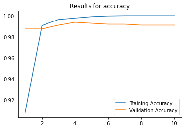
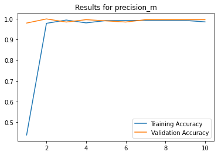
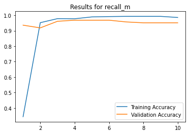
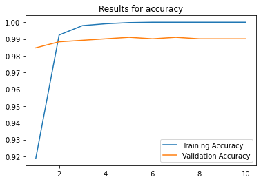
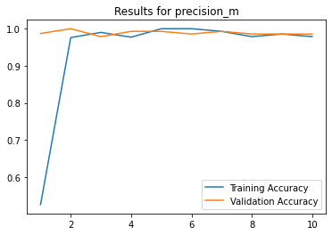
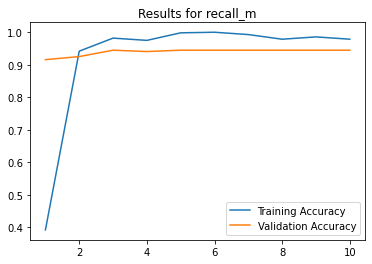

Advanced NLP#
word2vec
doc2vec
RNN
Basic pipeline#
Read and clean:#
# Read in, clean, and vectorize data
import nltk
import pandas as pd
import re
from sklearn.feature_extraction.text import TfidfVectorizer
import string
stopwords = nltk.corpus.stopwords.words('english')
messages = pd.read_csv('./spam.csv', encoding='latin-1')
messages = messages.drop(labels = ["Unnamed: 2", "Unnamed: 3", "Unnamed: 4"], axis = 1)
messages.columns = ["label", "text"]
def clean_text(text):
text = "".join([word.lower() for word in text if word not in string.punctuation])
tokens = re.split('\W+', text)
text = [word for word in tokens if word not in stopwords]
return text
tfidf_vect = TfidfVectorizer(analyzer=clean_text)
X_tfidf = tfidf_vect.fit_transform(messages['text'])
X_features = pd.DataFrame(X_tfidf.toarray())
X_features.head()
| 0 | 1 | 2 | 3 | 4 | 5 | 6 | 7 | 8 | 9 | ... | 9385 | 9386 | 9387 | 9388 | 9389 | 9390 | 9391 | 9392 | 9393 | 9394 | |
|---|---|---|---|---|---|---|---|---|---|---|---|---|---|---|---|---|---|---|---|---|---|
| 0 | 0.0 | 0.0 | 0.0 | 0.0 | 0.0 | 0.0 | 0.0 | 0.0 | 0.0 | 0.0 | ... | 0.0 | 0.0 | 0.0 | 0.0 | 0.0 | 0.0 | 0.0 | 0.0 | 0.0 | 0.0 |
| 1 | 0.0 | 0.0 | 0.0 | 0.0 | 0.0 | 0.0 | 0.0 | 0.0 | 0.0 | 0.0 | ... | 0.0 | 0.0 | 0.0 | 0.0 | 0.0 | 0.0 | 0.0 | 0.0 | 0.0 | 0.0 |
| 2 | 0.0 | 0.0 | 0.0 | 0.0 | 0.0 | 0.0 | 0.0 | 0.0 | 0.0 | 0.0 | ... | 0.0 | 0.0 | 0.0 | 0.0 | 0.0 | 0.0 | 0.0 | 0.0 | 0.0 | 0.0 |
| 3 | 0.0 | 0.0 | 0.0 | 0.0 | 0.0 | 0.0 | 0.0 | 0.0 | 0.0 | 0.0 | ... | 0.0 | 0.0 | 0.0 | 0.0 | 0.0 | 0.0 | 0.0 | 0.0 | 0.0 | 0.0 |
| 4 | 0.0 | 0.0 | 0.0 | 0.0 | 0.0 | 0.0 | 0.0 | 0.0 | 0.0 | 0.0 | ... | 0.0 | 0.0 | 0.0 | 0.0 | 0.0 | 0.0 | 0.0 | 0.0 | 0.0 | 0.0 |
5 rows × 9395 columns
RandomForestClassifier#
# Import Random Forest for classification from sklearn
from sklearn.ensemble import RandomForestClassifier
# Import the methods that will be needed to evaluate a basic model
from sklearn.metrics import precision_score, recall_score
from sklearn.model_selection import train_test_split
# Split data into training and test sets
X_train, X_test, y_train, y_test = train_test_split(X_features,
messages['label'],
test_size=0.2)
# Fit a basic Random Forest model
rf = RandomForestClassifier()
rf_model = rf.fit(X_train, y_train)
# Make predictions on the test set using the fit model
y_pred = rf_model.predict(X_test)
# Evalute model predictions using precision and recall
precision = precision_score(y_test, y_pred, pos_label='spam')
recall = recall_score(y_test, y_pred, pos_label='spam')
print('Precision: {} / Recall: {}'.format(round(precision, 3), round(recall, 3)))
Precision: 1.0 / Recall: 0.805
word2vec#
word2vec is a shallow, 2-layer neural network that accepts a text corpus as an input, and it returns a set of vectors (also known as embeddings); each vector is a numeric representatiopn of a given word.
“You shall know the word by the company it keeps.”
uses “Cosine similarity”#
\(\vec{Queen} = \vec{King} - \vec{Man} + \vec{Woman}\)
Explore Pre-trained Embeddings#
Some other options:
glove-twitter-{25/50/100/200}glove-wiki-gigaword-{50/200/300}word2vec-google-news-300word2vec-ruscorpora-news-300
# Load pretrained word vectors using gensim
import gensim.downloader as api
wiki_embeddings = api.load('glove-wiki-gigaword-100')
# Explore the word vector for "king"
wiki_embeddings['king']
array([-0.32307 , -0.87616 , 0.21977 , 0.25268 , 0.22976 , 0.7388 ,
-0.37954 , -0.35307 , -0.84369 , -1.1113 , -0.30266 , 0.33178 ,
-0.25113 , 0.30448 , -0.077491, -0.89815 , 0.092496, -1.1407 ,
-0.58324 , 0.66869 , -0.23122 , -0.95855 , 0.28262 , -0.078848,
0.75315 , 0.26584 , 0.3422 , -0.33949 , 0.95608 , 0.065641,
0.45747 , 0.39835 , 0.57965 , 0.39267 , -0.21851 , 0.58795 ,
-0.55999 , 0.63368 , -0.043983, -0.68731 , -0.37841 , 0.38026 ,
0.61641 , -0.88269 , -0.12346 , -0.37928 , -0.38318 , 0.23868 ,
0.6685 , -0.43321 , -0.11065 , 0.081723, 1.1569 , 0.78958 ,
-0.21223 , -2.3211 , -0.67806 , 0.44561 , 0.65707 , 0.1045 ,
0.46217 , 0.19912 , 0.25802 , 0.057194, 0.53443 , -0.43133 ,
-0.34311 , 0.59789 , -0.58417 , 0.068995, 0.23944 , -0.85181 ,
0.30379 , -0.34177 , -0.25746 , -0.031101, -0.16285 , 0.45169 ,
-0.91627 , 0.64521 , 0.73281 , -0.22752 , 0.30226 , 0.044801,
-0.83741 , 0.55006 , -0.52506 , -1.7357 , 0.4751 , -0.70487 ,
0.056939, -0.7132 , 0.089623, 0.41394 , -1.3363 , -0.61915 ,
-0.33089 , -0.52881 , 0.16483 , -0.98878 ], dtype=float32)
# Find the words most similar to king based on the trained word vectors
wiki_embeddings.most_similar('king')
[('prince', 0.7682329416275024),
('queen', 0.7507690787315369),
('son', 0.7020887732505798),
('brother', 0.6985775232315063),
('monarch', 0.6977890729904175),
('throne', 0.691999077796936),
('kingdom', 0.6811410188674927),
('father', 0.680202841758728),
('emperor', 0.6712858080863953),
('ii', 0.6676074266433716)]
Train our own model#
# Read in the data and clean up column names
import gensim
import numpy as np
import pandas as pd
from sklearn.model_selection import train_test_split
pd.set_option('display.max_colwidth', 100)
messages = pd.read_csv('./spam.csv', encoding='latin-1')
messages = messages.drop(labels = ["Unnamed: 2", "Unnamed: 3", "Unnamed: 4"], axis = 1)
messages.columns = ["label", "text"]
messages.head()
| label | text | |
|---|---|---|
| 0 | ham | Go until jurong point, crazy.. Available only in bugis n great world la e buffet... Cine there g... |
| 1 | ham | Ok lar... Joking wif u oni... |
| 2 | spam | Free entry in 2 a wkly comp to win FA Cup final tkts 21st May 2005. Text FA to 87121 to receive ... |
| 3 | ham | U dun say so early hor... U c already then say... |
| 4 | ham | Nah I don't think he goes to usf, he lives around here though |
# Clean data using the built in cleaner in gensim
messages['text_clean'] = messages['text'].apply(lambda x: gensim.utils.simple_preprocess(x))
messages.head()
| label | text | text_clean | |
|---|---|---|---|
| 0 | ham | Go until jurong point, crazy.. Available only in bugis n great world la e buffet... Cine there g... | [go, until, jurong, point, crazy, available, only, in, bugis, great, world, la, buffet, cine, th... |
| 1 | ham | Ok lar... Joking wif u oni... | [ok, lar, joking, wif, oni] |
| 2 | spam | Free entry in 2 a wkly comp to win FA Cup final tkts 21st May 2005. Text FA to 87121 to receive ... | [free, entry, in, wkly, comp, to, win, fa, cup, final, tkts, st, may, text, fa, to, to, receive,... |
| 3 | ham | U dun say so early hor... U c already then say... | [dun, say, so, early, hor, already, then, say] |
| 4 | ham | Nah I don't think he goes to usf, he lives around here though | [nah, don, think, he, goes, to, usf, he, lives, around, here, though] |
# Split data into train and test sets
X_train, X_test, y_train, y_test = train_test_split(messages['text_clean'],
messages['label'], test_size=0.2)
# Train the word2vec model
w2v_model = gensim.models.Word2Vec(X_train,
size=100,
window=5,
min_count=2)
# Explore the word vector for "king" base on our trained model
w2v_model.wv['king']
array([ 8.22794437e-02, 7.15377703e-02, 1.13073792e-02, -6.92935893e-04,
-5.78757329e-03, -2.24397099e-03, 3.08556780e-02, 1.28532007e-01,
-4.49366197e-02, 1.40099856e-03, 9.39837322e-02, 9.83330309e-02,
2.96608564e-02, 1.88523494e-02, 7.69960880e-02, -2.38459632e-02,
-2.20810138e-02, -4.47637960e-02, -3.52773368e-02, -3.94348390e-02,
2.40708720e-02, 3.34583744e-02, 9.19674989e-03, -6.58849776e-02,
3.25308107e-02, 7.00966362e-03, -1.93505250e-02, -7.13438392e-02,
-5.31851910e-02, -1.93836279e-02, -5.48255108e-02, -4.52534631e-02,
-1.12883314e-01, -4.39974666e-02, -3.12781222e-02, 3.94870266e-02,
2.48225518e-02, 1.02029257e-01, 1.68355368e-02, -2.96352208e-02,
-4.72212359e-02, -1.04903663e-02, 2.51805969e-02, 4.88484688e-02,
3.09625524e-03, 4.78431545e-02, 1.08772004e-02, 3.26122977e-02,
-8.82226601e-02, -8.90500620e-02, -7.91083947e-02, 7.29472116e-02,
-2.14259792e-02, 1.16243578e-01, 5.48660718e-02, 8.18767399e-02,
3.06534115e-04, -1.09556250e-01, 8.95170122e-02, -7.96145499e-02,
9.35777426e-02, 3.22407782e-02, -3.69137502e-03, -9.48343202e-02,
-1.49107471e-01, 2.22490802e-02, -2.27584466e-02, 4.20865230e-02,
7.94619173e-02, 1.12201291e-04, -8.41916446e-03, 1.47700962e-02,
2.55049989e-02, -2.59182503e-04, -6.56038299e-02, -3.70079242e-02,
-6.59312084e-02, -2.83849202e-02, -1.01926044e-01, -5.59506528e-02,
6.67202100e-02, -6.29046559e-02, 6.54808506e-02, -8.57574195e-02,
9.10010710e-02, 2.61553973e-02, 1.59907732e-02, -2.33701877e-02,
6.09138459e-02, 4.69054002e-03, -4.47405912e-02, -8.00395831e-02,
5.79755083e-02, 4.76236120e-02, -8.65149274e-02, 3.24716941e-02,
-1.27660129e-02, -7.21691623e-02, 1.85737591e-02, -1.11927148e-02],
dtype=float32)
# Find the most similar words to "king" based on word vectors from our trained model
w2v_model.wv.most_similar('king')
[('sex', 0.9987980127334595),
('then', 0.9987930059432983),
('same', 0.9987838268280029),
('sms', 0.9987767934799194),
('stuff', 0.9987733960151672),
('of', 0.9987660050392151),
('but', 0.9987635612487793),
('even', 0.9987606406211853),
('see', 0.9987546801567078),
('real', 0.9987517595291138)]
Prep word vectors#
# Generate a list of words the word2vec model learned word vectors for
w2v_model.wv.index2word
['you',
'to',
'the',
'and',
'in',
'is',
'my',
'me',
'it',
'for',
'your',
'of',
'call',
'have',
'that',
'on',
'are',
'now',
'not',
'can',
'but',
'so',
'or',
'do',
'we',
'at',
'with',
'be',
'get',
'if',
'will',
'ur',
'just',
'no',
'this',
'up',
'gt',
'lt',
'how',
'free',
'when',
'from',
'what',
'ok',
'all',
'go',
'know',
'out',
'll',
'like',
'good',
'day',
'am',
'got',
'was',
'come',
'he',
'its',
'there',
'then',
'only',
'time',
'love',
'text',
'want',
'send',
'as',
'txt',
'one',
'see',
'by',
'need',
'about',
'lor',
'today',
'going',
'home',
'she',
'stop',
'still',
'sorry',
'da',
'don',
'our',
'reply',
'back',
'please',
'tell',
'dont',
'new',
'pls',
'later',
'did',
'they',
'mobile',
'her',
'hi',
'phone',
'think',
'week',
'take',
'any',
'well',
'been',
'dear',
'some',
'where',
're',
'him',
'here',
'has',
'who',
'msg',
'happy',
'an',
'ì_',
'oh',
'hope',
'too',
'more',
'much',
'great',
'should',
'night',
'make',
'way',
'message',
'claim',
'hey',
'wat',
'www',
'had',
'work',
'yes',
'number',
'won',
'said',
've',
'right',
'tomorrow',
'prize',
'after',
'give',
'amp',
'doing',
'say',
'yeah',
'really',
'meet',
'life',
'win',
'ask',
'why',
'them',
'cash',
'com',
'thanks',
'find',
'very',
'uk',
'im',
'miss',
'already',
'would',
'babe',
'lol',
'buy',
'let',
'morning',
'cos',
'keep',
'every',
'also',
'service',
'urgent',
'min',
'contact',
'again',
'anything',
'sent',
'sure',
'pick',
'last',
'nokia',
'over',
'first',
'which',
'always',
'nice',
'us',
'help',
'were',
'went',
'cant',
'something',
'wait',
'money',
'care',
'per',
'next',
'around',
'box',
'thing',
'off',
'gonna',
'sleep',
'place',
'his',
'could',
'pm',
'chat',
'down',
'may',
'customer',
'feel',
'many',
'tone',
'soon',
'even',
'sms',
'mins',
'someone',
'friends',
'name',
'tonight',
'late',
'gud',
'hello',
'co',
'ya',
'st',
'people',
'wish',
'friend',
'leave',
'done',
'special',
'waiting',
'before',
'guaranteed',
'same',
'other',
'told',
'ìï',
'thought',
'yet',
'use',
'haha',
'dun',
'live',
'wan',
'god',
'heart',
'cool',
'getting',
'year',
'days',
'th',
'mind',
'best',
'holiday',
'ppm',
'draw',
'meeting',
'try',
'lunch',
'coming',
'class',
'man',
'talk',
'smile',
'stuff',
'end',
'things',
'wk',
'cs',
'bit',
'fine',
'job',
'thk',
'line',
'being',
'pobox',
'sir',
'long',
'trying',
'play',
'enjoy',
'having',
'car',
'thats',
'ready',
'better',
'didn',
'wanna',
'finish',
'ill',
'few',
'because',
'yup',
'house',
'half',
'bt',
'month',
'world',
'never',
'dat',
'big',
'jus',
'receive',
'word',
'account',
'person',
'lot',
'guess',
'chance',
'ah',
'room',
'than',
'weekend',
'check',
'sweet',
'into',
'pa',
'birthday',
'po',
'hrs',
'watching',
'shows',
'shit',
'might',
'boy',
'missing',
'landline',
'yo',
'start',
'early',
'real',
'lar',
'ever',
'video',
'minutes',
'thanx',
'another',
'once',
'enough',
'princess',
'camera',
'part',
'xxx',
'dunno',
'offer',
'girl',
'between',
'quite',
'awarded',
'sat',
'pay',
'cost',
'den',
'two',
'eat',
'called',
'didnt',
'face',
'ringtone',
'wife',
'evening',
'luv',
'aight',
'liao',
'nothing',
'remember',
'tv',
'nite',
'nd',
'rate',
'speak',
'bed',
'code',
'easy',
'tones',
'hear',
'actually',
'does',
'problem',
'dis',
'probably',
'everything',
'award',
'guys',
'shall',
'look',
'join',
'wont',
'okay',
'collection',
'age',
'goes',
'working',
'put',
'afternoon',
'dinner',
'xmas',
'latest',
'apply',
'wot',
'baby',
'maybe',
'those',
'messages',
'plan',
'calls',
'tmr',
'plus',
'gift',
'show',
'little',
'wake',
'until',
'came',
'made',
'most',
'orange',
'details',
'times',
'forgot',
'years',
'shopping',
'watch',
'sexy',
'kiss',
'thank',
'collect',
'asked',
'selected',
'mail',
'leh',
'book',
'hour',
'decimal',
'bad',
'reach',
'hot',
'de',
'town',
'missed',
'school',
'club',
'fun',
'havent',
'bus',
'mob',
'texts',
'oso',
'while',
'pain',
'though',
'hair',
'valid',
'online',
'network',
'sch',
'important',
'must',
'lei',
'hav',
'stay',
'date',
'words',
'sleeping',
'left',
'yesterday',
'looking',
'office',
'food',
'making',
'lose',
'entry',
'away',
'able',
'juz',
'change',
'else',
'yours',
'alright',
'music',
'abt',
'weekly',
'id',
'took',
'game',
'true',
'order',
'wen',
'fuck',
'means',
'says',
'haf',
'ard',
'national',
'xx',
'hurt',
'old',
'worry',
'tried',
'gr',
'friendship',
'either',
'await',
'sae',
'tot',
'full',
'hours',
'family',
'address',
'happen',
'anyway',
'makes',
'sad',
'games',
'yourself',
'goin',
'question',
'story',
'mean',
'dad',
'price',
'delivery',
'okie',
'wif',
'dude',
'these',
'since',
'without',
'trip',
'plz',
'haven',
'net',
'feeling',
'comes',
'poly',
'email',
'parents',
'finished',
'saw',
'head',
'run',
'eve',
'smiling',
'congrats',
'calling',
'wid',
'drive',
'points',
'news',
'brother',
'mine',
'minute',
'pic',
'pics',
'pub',
'charge',
'wanted',
'top',
'dating',
'till',
'optout',
'rite',
'http',
'sun',
'todays',
'bring',
'attempt',
'answer',
'taking',
'leaving',
'info',
'close',
'shop',
'movie',
'huh',
'update',
'test',
'dreams',
'bonus',
'wil',
'guy',
'bored',
'private',
'company',
'found',
'driving',
'lets',
'both',
'nt',
'together',
'wants',
'wrong',
'crazy',
'needs',
'choose',
'mom',
'boytoy',
'thinking',
'aft',
'touch',
'lots',
'search',
'chennai',
'tomo',
'til',
'ring',
'fast',
'noe',
'awesome',
'college',
'busy',
'available',
'colour',
'everyone',
'set',
'smoke',
'neva',
'gbp',
'loving',
'vouchers',
'takes',
'sunday',
'beautiful',
'forget',
'gd',
'double',
'drink',
'decided',
'sister',
'mrng',
'msgs',
'yr',
'unsubscribe',
'anytime',
'break',
'coz',
'mths',
'lovely',
'happened',
'land',
'blue',
'open',
'statement',
'expires',
'visit',
'lesson',
'mum',
'smth',
'card',
'anyone',
'eh',
'chikku',
'walk',
'pounds',
'started',
'each',
'carlos',
'christmas',
'sk',
'alone',
'goodmorning',
'finally',
'content',
'sounds',
'frnds',
'tc',
'treat',
'hand',
'oredi',
'kind',
'û_',
'pretty',
'ltd',
'far',
'party',
'sex',
'darlin',
'drop',
'hmm',
'seeing',
'hows',
'ten',
'identifier',
'light',
'congratulations',
'type',
'unlimited',
'grins',
'ha',
'saturday',
'outside',
'cause',
'download',
'whats',
'least',
'surprise',
'worth',
'happiness',
'opt',
'services',
'song',
'rs',
'sis',
'final',
'lucky',
'log',
'almost',
'felt',
'john',
'tho',
'hl',
'hit',
'saying',
'auction',
'credit',
'uncle',
'gas',
'winner',
'computer',
'hard',
'ni',
'prob',
'seen',
'case',
'believe',
'doesn',
'wonderful',
'fancy',
'welcome',
'row',
'player',
'quiz',
'fr',
'bout',
'father',
'freemsg',
'wq',
'simple',
'na',
'lost',
'sea',
'post',
'mah',
'snow',
'met',
'gn',
'exam',
'friday',
'mate',
'mobileupd',
'knw',
'numbers',
'cum',
'information',
'phones',
'side',
'joy',
'reason',
'used',
'weeks',
'camcorder',
'hmmm',
'operator',
'ago',
'plans',
'picking',
'area',
'gal',
'fucking',
'angry',
'earlier',
'bath',
'tel',
'girls',
'support',
'their',
'fone',
'un',
'months',
'voucher',
'police',
'telling',
'frnd',
'via',
'correct',
'eg',
'reading',
'course',
'enter',
'rock',
'rest',
'gone',
'offers',
'gettin',
'bank',
'pass',
'normal',
'press',
'wap',
'terms',
'nope',
'extra',
'move',
'woke',
'gave',
'within',
'charged',
'cut',
'through',
'wit',
'study',
'confirm',
'march',
'wkly',
'xy',
'ntt',
'reward',
'fact',
'understand',
'spend',
'mates',
'safe',
'ish',
'supposed',
'secret',
'meant',
'swing',
'comin',
'ass',
'invited',
'die',
'caller',
'askd',
'ans',
'hold',
'darren',
'cheap',
'mobiles',
'redeemed',
'sending',
'semester',
'mu',
'hungry',
'direct',
'checking',
'water',
'second',
'truth',
'wana',
'suite',
'wow',
'park',
'txts',
'ipod',
'slowly',
'heard',
'complimentary',
'moment',
'ugh',
'whole',
'warm',
'paper',
'hospital',
'own',
'brings',
'loved',
'ge',
'balance',
'savamob',
'merry',
'ringtones',
'stupid',
'gets',
'hee',
'children',
'charity',
'sound',
'comp',
'link',
'il',
'project',
'representative',
'cr',
'listen',
'laugh',
'mr',
'loads',
'frm',
'access',
'knows',
'immediately',
'ho',
'nyt',
'store',
'somebody',
'yep',
'kate',
'india',
'couple',
'valued',
'ends',
'bill',
'questions',
'worries',
'point',
'isn',
'leaves',
'dogging',
'fri',
'usual',
'pound',
'read',
'rental',
'ts',
'max',
'boss',
'ac',
'completely',
'em',
'buying',
'gotta',
'weed',
'film',
'crave',
'feels',
'kids',
'colleagues',
'thinks',
'mm',
'mrt',
'talking',
'entered',
'reveal',
'la',
'rakhesh',
'blood',
'rply',
'fantastic',
'asking',
'anymore',
'hw',
'difficult',
'user',
'asap',
'wasn',
'shower',
'whatever',
'train',
'sofa',
'catch',
'hiya',
'energy',
'motorola',
'none',
'slave',
'possible',
'thru',
'ex',
'moon',
'awaiting',
'muz',
'vl',
'luck',
'tickets',
'iam',
'bslvyl',
'less',
'different',
'bedroom',
'wc',
'workin',
'clean',
'dead',
'whenever',
'registered',
'wine',
'yar',
'abiola',
'kick',
'meh',
'txting',
'door',
'goodnight',
'deal',
'noon',
'sale',
'doesnt',
'lovable',
'dnt',
'jay',
'slept',
'yrs',
'convey',
...]
# Generate aggregated sentence vectors based on the word vectors for each word in the sentence
w2v_vect = np.array([np.array([w2v_model.wv[i] for i in ls if i in w2v_model.wv.index2word])
for ls in X_test], dtype=object)
# Why is the length of the sentence different than the length of the sentence vector?
for i, v in enumerate(w2v_vect):
print(len(X_test.iloc[i]), len(v))
14 14
7 7
6 6
13 13
8 7
16 15
6 4
17 15
7 6
6 6
6 6
26 23
4 4
25 25
11 11
22 22
19 14
27 27
10 9
29 28
2 2
7 7
17 17
8 8
4 4
9 9
6 5
11 11
5 4
9 7
21 16
10 10
9 9
27 27
8 8
6 3
7 6
2 2
24 19
29 26
9 8
21 19
6 5
6 6
22 18
24 21
11 10
7 6
33 31
7 7
41 36
20 19
22 18
23 23
17 17
9 8
6 6
16 16
12 12
11 10
41 34
5 5
3 3
24 23
18 16
9 9
8 7
30 30
23 23
8 8
29 27
33 32
10 10
12 12
29 29
5 5
13 13
4 3
6 6
24 24
16 15
3 1
9 9
15 11
15 13
12 11
7 7
11 11
6 6
1 1
19 18
13 12
6 6
14 14
5 4
23 23
8 7
25 24
17 17
4 2
17 17
10 9
5 5
10 9
13 11
6 6
9 7
17 16
14 14
13 10
32 31
23 22
22 21
23 22
9 9
18 16
21 18
7 7
16 12
22 22
16 16
8 7
8 8
24 14
30 25
8 8
25 19
6 6
5 5
5 5
2 2
7 7
29 28
5 5
8 8
6 6
25 25
26 25
23 23
8 8
13 13
22 22
13 12
8 7
5 5
15 15
14 14
13 12
11 9
31 31
23 21
36 35
7 5
30 30
4 4
9 6
15 14
7 6
16 16
1 1
10 8
19 18
25 20
7 7
16 12
3 2
44 41
8 5
17 16
81 79
11 11
47 40
6 5
73 69
7 7
7 7
14 13
20 19
16 12
11 10
9 8
18 17
11 11
17 17
7 4
7 6
22 21
17 17
7 7
23 21
4 4
5 5
3 3
5 5
9 7
3 3
12 11
9 9
26 25
29 26
8 5
7 7
16 15
25 24
3 3
10 10
16 14
17 16
27 26
3 3
19 16
9 9
4 4
10 9
11 10
19 19
20 19
32 31
2 2
22 20
27 25
5 5
9 7
4 4
23 22
5 4
29 28
11 9
5 5
6 6
31 31
9 9
7 6
19 18
3 2
11 11
21 18
6 5
3 2
5 5
21 21
8 7
21 19
16 15
15 13
8 8
6 6
22 20
21 18
5 4
6 6
14 14
27 26
17 16
9 9
10 10
18 18
6 6
20 18
27 22
26 23
24 22
24 24
1 1
19 12
9 9
12 10
14 13
7 7
8 8
25 25
5 5
9 7
29 26
3 3
7 6
18 16
19 19
22 22
30 29
8 6
5 5
8 8
15 12
6 5
14 14
5 5
7 6
14 11
6 6
42 35
11 10
8 8
26 24
8 8
10 10
18 15
7 7
11 11
7 7
6 6
26 24
28 23
8 7
28 26
17 16
19 14
24 20
9 7
5 5
5 5
4 4
20 20
4 4
14 13
5 5
18 13
14 14
7 7
14 12
6 2
8 8
29 29
15 15
14 13
8 6
12 12
5 4
14 14
10 10
2 2
8 8
12 11
21 21
33 29
27 26
33 33
23 22
5 4
9 8
3 2
24 24
8 8
26 21
5 5
16 10
3 2
5 5
25 25
4 4
17 15
8 7
20 19
9 9
23 19
20 20
31 29
17 16
7 7
6 6
7 7
16 16
12 12
7 7
19 15
5 5
29 28
29 29
21 20
18 17
22 20
8 8
8 8
23 18
13 13
8 5
23 23
5 5
24 22
33 33
6 5
23 22
3 3
7 7
7 6
19 17
3 3
8 8
10 10
7 6
7 6
10 10
26 25
79 75
7 6
11 11
10 9
10 9
22 22
15 14
23 23
9 8
8 3
3 3
13 11
16 15
7 7
7 5
22 21
7 6
15 15
27 22
8 6
15 14
1 1
26 23
19 15
9 9
12 11
23 19
8 8
7 7
4 3
13 13
21 19
16 15
18 16
11 9
5 5
9 7
9 9
5 4
11 11
12 11
24 21
6 5
15 14
4 4
25 25
7 5
6 5
10 9
8 8
19 19
23 19
7 5
45 44
29 28
8 8
16 16
12 12
2 2
20 20
7 6
31 29
18 18
18 18
31 25
22 21
11 10
17 12
8 8
6 6
23 19
10 9
19 19
3 3
6 6
10 9
20 17
14 12
18 14
12 12
19 19
16 14
23 23
9 8
6 6
20 17
10 6
29 29
28 28
15 15
5 5
4 4
7 6
5 5
12 11
6 5
11 10
7 6
6 4
10 10
1 1
5 5
16 16
8 8
12 11
5 5
21 21
4 4
38 35
6 5
13 12
24 24
18 17
33 29
10 8
21 21
4 4
13 12
5 5
5 4
22 21
4 4
7 7
16 14
27 27
25 23
14 14
11 11
6 6
11 11
4 4
25 21
21 18
19 19
5 5
14 11
14 14
5 5
31 30
24 22
20 17
24 20
6 6
13 11
5 4
15 14
30 29
18 17
9 5
20 20
9 9
3 3
19 17
7 7
5 5
29 27
9 9
23 13
26 26
23 22
8 6
6 5
26 25
3 3
6 6
17 16
8 8
12 12
6 6
7 6
8 2
5 5
8 7
14 14
15 15
26 24
4 4
12 11
31 29
34 33
6 6
13 13
6 6
1 1
12 9
5 5
20 17
3 3
8 6
18 14
24 23
5 4
15 14
24 24
13 12
50 45
6 4
27 27
8 8
23 19
9 9
17 13
7 7
23 20
9 7
13 11
5 4
24 24
8 7
9 8
6 6
5 5
6 5
21 9
5 3
15 15
11 9
8 8
10 10
2 2
5 2
0 0
10 9
9 9
7 5
26 25
9 9
20 18
4 2
6 5
25 20
27 26
12 12
35 34
9 5
15 15
30 30
26 24
5 5
9 9
13 12
4 3
12 7
13 12
16 14
8 8
5 5
30 22
21 20
23 21
24 24
12 11
5 5
20 19
21 18
10 9
10 9
14 13
11 10
21 18
5 5
9 7
5 4
24 21
46 40
7 7
4 4
10 8
7 5
7 7
16 16
28 24
7 7
15 13
9 9
4 4
8 8
7 6
8 8
16 16
24 22
27 27
27 27
8 7
24 20
5 4
10 10
13 13
6 6
26 26
5 5
11 11
3 3
6 4
9 9
25 22
7 6
50 44
8 8
44 42
5 3
6 6
27 22
8 7
15 14
21 21
9 9
15 14
9 9
9 8
6 6
22 19
20 20
1 1
30 30
23 22
10 10
110 82
6 5
7 7
22 22
15 14
22 22
4 2
11 8
18 17
1 1
4 4
46 40
11 11
6 6
10 8
9 9
10 10
29 27
4 4
25 25
13 13
6 6
26 22
26 24
15 11
23 23
68 63
31 29
17 16
20 18
4 4
7 6
26 23
4 4
5 4
11 11
13 12
22 19
9 7
10 8
7 7
8 7
13 10
9 8
5 5
9 9
5 5
5 5
6 6
6 4
9 9
20 14
6 6
13 12
24 21
7 7
26 19
29 28
12 11
6 6
15 12
16 14
5 5
8 8
17 16
23 21
6 5
7 6
6 6
14 14
1 1
25 23
30 28
11 10
30 30
13 13
17 17
9 9
20 19
18 17
20 18
6 6
22 22
1 1
20 19
10 9
8 7
5 5
31 26
5 5
18 17
9 8
75 66
4 4
6 6
6 6
6 6
28 28
11 11
12 12
21 21
25 24
19 14
29 28
5 4
12 11
18 17
5 5
14 14
20 17
8 8
11 11
23 23
10 10
21 19
12 11
21 21
5 3
28 27
7 5
7 5
8 8
4 4
9 8
8 7
14 14
8 8
21 20
17 16
29 29
13 9
13 12
5 5
21 21
22 22
17 16
5 5
3 3
9 8
26 24
7 7
8 7
17 17
10 9
17 14
16 15
5 5
3 2
17 15
21 20
14 12
22 17
23 20
16 15
6 6
17 17
21 21
8 6
15 10
9 9
4 4
7 7
25 19
14 14
30 29
10 9
28 27
8 5
6 6
4 4
4 3
15 10
1 1
4 4
19 18
4 4
25 23
10 10
12 12
20 19
19 17
6 5
13 13
5 5
6 5
42 35
14 11
12 9
10 8
14 14
6 6
15 14
17 17
14 14
14 13
12 11
22 20
18 17
9 7
17 17
22 21
28 24
24 24
18 17
8 6
5 5
6 4
4 4
21 21
7 6
22 21
5 4
18 14
6 6
7 7
20 19
29 26
7 5
7 7
26 21
17 17
6 4
27 26
16 14
17 14
22 20
3 1
5 5
10 10
17 13
27 27
8 7
6 5
28 23
20 18
15 15
22 15
17 16
12 12
10 10
10 8
5 4
24 22
23 17
5 5
24 24
4 4
27 24
5 4
25 22
26 24
9 9
13 13
4 3
19 19
27 26
14 11
8 7
10 10
10 10
13 13
10 7
5 5
3 2
6 6
12 11
23 22
9 9
16 16
29 27
17 17
8 4
13 9
38 31
26 26
4 4
5 5
12 12
18 16
17 17
20 17
6 6
15 14
15 15
27 6
12 11
8 8
31 29
6 5
4 4
22 11
42 39
10 8
47 32
4 4
21 19
5 5
22 21
30 30
4 4
7 6
11 10
16 16
8 8
6 5
9 9
16 16
9 9
10 9
7 7
24 23
5 5
13 12
4 4
7 6
7 6
20 19
10 10
65 59
4 1
37 29
16 13
25 25
5 3
9 8
13 11
6 5
23 20
15 15
23 19
16 16
19 17
24 22
9 9
5 4
9 9
27 25
4 1
5 5
28 27
7 6
8 8
3 3
6 6
19 18
6 4
15 14
23 23
1 1
9 9
6 5
13 13
5 5
16 11
9 8
8 8
18 16
4 4
7 6
14 14
16 14
7 7
8 8
12 12
18 18
6 6
22 17
14 13
5 3
5 4
21 21
8 8
5 5
25 23
20 16
8 6
14 11
8 7
6 5
16 16
16 16
21 18
13 11
10 8
5 4
8 7
26 25
20 20
13 13
6 6
61 56
11 10
4 4
8 7
7 7
21 21
5 5
22 20
10 9
33 31
9 9
47 46
23 18
16 16
25 21
# Compute sentence vectors by averaging the word vectors for the words contained in the sentence
w2v_vect_avg = []
for vect in w2v_vect:
if len(vect)!=0:
w2v_vect_avg.append(vect.mean(axis=0))
else:
w2v_vect_avg.append(np.zeros(100))
# Are our sentence vector lengths consistent?
for i, v in enumerate(w2v_vect_avg):
print(len(X_test.iloc[i]), len(v))
14 100
7 100
6 100
13 100
8 100
16 100
6 100
17 100
7 100
6 100
6 100
26 100
4 100
25 100
11 100
22 100
19 100
27 100
10 100
29 100
2 100
7 100
17 100
8 100
4 100
9 100
6 100
11 100
5 100
9 100
21 100
10 100
9 100
27 100
8 100
6 100
7 100
2 100
24 100
29 100
9 100
21 100
6 100
6 100
22 100
24 100
11 100
7 100
33 100
7 100
41 100
20 100
22 100
23 100
17 100
9 100
6 100
16 100
12 100
11 100
41 100
5 100
3 100
24 100
18 100
9 100
8 100
30 100
23 100
8 100
29 100
33 100
10 100
12 100
29 100
5 100
13 100
4 100
6 100
24 100
16 100
3 100
9 100
15 100
15 100
12 100
7 100
11 100
6 100
1 100
19 100
13 100
6 100
14 100
5 100
23 100
8 100
25 100
17 100
4 100
17 100
10 100
5 100
10 100
13 100
6 100
9 100
17 100
14 100
13 100
32 100
23 100
22 100
23 100
9 100
18 100
21 100
7 100
16 100
22 100
16 100
8 100
8 100
24 100
30 100
8 100
25 100
6 100
5 100
5 100
2 100
7 100
29 100
5 100
8 100
6 100
25 100
26 100
23 100
8 100
13 100
22 100
13 100
8 100
5 100
15 100
14 100
13 100
11 100
31 100
23 100
36 100
7 100
30 100
4 100
9 100
15 100
7 100
16 100
1 100
10 100
19 100
25 100
7 100
16 100
3 100
44 100
8 100
17 100
81 100
11 100
47 100
6 100
73 100
7 100
7 100
14 100
20 100
16 100
11 100
9 100
18 100
11 100
17 100
7 100
7 100
22 100
17 100
7 100
23 100
4 100
5 100
3 100
5 100
9 100
3 100
12 100
9 100
26 100
29 100
8 100
7 100
16 100
25 100
3 100
10 100
16 100
17 100
27 100
3 100
19 100
9 100
4 100
10 100
11 100
19 100
20 100
32 100
2 100
22 100
27 100
5 100
9 100
4 100
23 100
5 100
29 100
11 100
5 100
6 100
31 100
9 100
7 100
19 100
3 100
11 100
21 100
6 100
3 100
5 100
21 100
8 100
21 100
16 100
15 100
8 100
6 100
22 100
21 100
5 100
6 100
14 100
27 100
17 100
9 100
10 100
18 100
6 100
20 100
27 100
26 100
24 100
24 100
1 100
19 100
9 100
12 100
14 100
7 100
8 100
25 100
5 100
9 100
29 100
3 100
7 100
18 100
19 100
22 100
30 100
8 100
5 100
8 100
15 100
6 100
14 100
5 100
7 100
14 100
6 100
42 100
11 100
8 100
26 100
8 100
10 100
18 100
7 100
11 100
7 100
6 100
26 100
28 100
8 100
28 100
17 100
19 100
24 100
9 100
5 100
5 100
4 100
20 100
4 100
14 100
5 100
18 100
14 100
7 100
14 100
6 100
8 100
29 100
15 100
14 100
8 100
12 100
5 100
14 100
10 100
2 100
8 100
12 100
21 100
33 100
27 100
33 100
23 100
5 100
9 100
3 100
24 100
8 100
26 100
5 100
16 100
3 100
5 100
25 100
4 100
17 100
8 100
20 100
9 100
23 100
20 100
31 100
17 100
7 100
6 100
7 100
16 100
12 100
7 100
19 100
5 100
29 100
29 100
21 100
18 100
22 100
8 100
8 100
23 100
13 100
8 100
23 100
5 100
24 100
33 100
6 100
23 100
3 100
7 100
7 100
19 100
3 100
8 100
10 100
7 100
7 100
10 100
26 100
79 100
7 100
11 100
10 100
10 100
22 100
15 100
23 100
9 100
8 100
3 100
13 100
16 100
7 100
7 100
22 100
7 100
15 100
27 100
8 100
15 100
1 100
26 100
19 100
9 100
12 100
23 100
8 100
7 100
4 100
13 100
21 100
16 100
18 100
11 100
5 100
9 100
9 100
5 100
11 100
12 100
24 100
6 100
15 100
4 100
25 100
7 100
6 100
10 100
8 100
19 100
23 100
7 100
45 100
29 100
8 100
16 100
12 100
2 100
20 100
7 100
31 100
18 100
18 100
31 100
22 100
11 100
17 100
8 100
6 100
23 100
10 100
19 100
3 100
6 100
10 100
20 100
14 100
18 100
12 100
19 100
16 100
23 100
9 100
6 100
20 100
10 100
29 100
28 100
15 100
5 100
4 100
7 100
5 100
12 100
6 100
11 100
7 100
6 100
10 100
1 100
5 100
16 100
8 100
12 100
5 100
21 100
4 100
38 100
6 100
13 100
24 100
18 100
33 100
10 100
21 100
4 100
13 100
5 100
5 100
22 100
4 100
7 100
16 100
27 100
25 100
14 100
11 100
6 100
11 100
4 100
25 100
21 100
19 100
5 100
14 100
14 100
5 100
31 100
24 100
20 100
24 100
6 100
13 100
5 100
15 100
30 100
18 100
9 100
20 100
9 100
3 100
19 100
7 100
5 100
29 100
9 100
23 100
26 100
23 100
8 100
6 100
26 100
3 100
6 100
17 100
8 100
12 100
6 100
7 100
8 100
5 100
8 100
14 100
15 100
26 100
4 100
12 100
31 100
34 100
6 100
13 100
6 100
1 100
12 100
5 100
20 100
3 100
8 100
18 100
24 100
5 100
15 100
24 100
13 100
50 100
6 100
27 100
8 100
23 100
9 100
17 100
7 100
23 100
9 100
13 100
5 100
24 100
8 100
9 100
6 100
5 100
6 100
21 100
5 100
15 100
11 100
8 100
10 100
2 100
5 100
0 100
10 100
9 100
7 100
26 100
9 100
20 100
4 100
6 100
25 100
27 100
12 100
35 100
9 100
15 100
30 100
26 100
5 100
9 100
13 100
4 100
12 100
13 100
16 100
8 100
5 100
30 100
21 100
23 100
24 100
12 100
5 100
20 100
21 100
10 100
10 100
14 100
11 100
21 100
5 100
9 100
5 100
24 100
46 100
7 100
4 100
10 100
7 100
7 100
16 100
28 100
7 100
15 100
9 100
4 100
8 100
7 100
8 100
16 100
24 100
27 100
27 100
8 100
24 100
5 100
10 100
13 100
6 100
26 100
5 100
11 100
3 100
6 100
9 100
25 100
7 100
50 100
8 100
44 100
5 100
6 100
27 100
8 100
15 100
21 100
9 100
15 100
9 100
9 100
6 100
22 100
20 100
1 100
30 100
23 100
10 100
110 100
6 100
7 100
22 100
15 100
22 100
4 100
11 100
18 100
1 100
4 100
46 100
11 100
6 100
10 100
9 100
10 100
29 100
4 100
25 100
13 100
6 100
26 100
26 100
15 100
23 100
68 100
31 100
17 100
20 100
4 100
7 100
26 100
4 100
5 100
11 100
13 100
22 100
9 100
10 100
7 100
8 100
13 100
9 100
5 100
9 100
5 100
5 100
6 100
6 100
9 100
20 100
6 100
13 100
24 100
7 100
26 100
29 100
12 100
6 100
15 100
16 100
5 100
8 100
17 100
23 100
6 100
7 100
6 100
14 100
1 100
25 100
30 100
11 100
30 100
13 100
17 100
9 100
20 100
18 100
20 100
6 100
22 100
1 100
20 100
10 100
8 100
5 100
31 100
5 100
18 100
9 100
75 100
4 100
6 100
6 100
6 100
28 100
11 100
12 100
21 100
25 100
19 100
29 100
5 100
12 100
18 100
5 100
14 100
20 100
8 100
11 100
23 100
10 100
21 100
12 100
21 100
5 100
28 100
7 100
7 100
8 100
4 100
9 100
8 100
14 100
8 100
21 100
17 100
29 100
13 100
13 100
5 100
21 100
22 100
17 100
5 100
3 100
9 100
26 100
7 100
8 100
17 100
10 100
17 100
16 100
5 100
3 100
17 100
21 100
14 100
22 100
23 100
16 100
6 100
17 100
21 100
8 100
15 100
9 100
4 100
7 100
25 100
14 100
30 100
10 100
28 100
8 100
6 100
4 100
4 100
15 100
1 100
4 100
19 100
4 100
25 100
10 100
12 100
20 100
19 100
6 100
13 100
5 100
6 100
42 100
14 100
12 100
10 100
14 100
6 100
15 100
17 100
14 100
14 100
12 100
22 100
18 100
9 100
17 100
22 100
28 100
24 100
18 100
8 100
5 100
6 100
4 100
21 100
7 100
22 100
5 100
18 100
6 100
7 100
20 100
29 100
7 100
7 100
26 100
17 100
6 100
27 100
16 100
17 100
22 100
3 100
5 100
10 100
17 100
27 100
8 100
6 100
28 100
20 100
15 100
22 100
17 100
12 100
10 100
10 100
5 100
24 100
23 100
5 100
24 100
4 100
27 100
5 100
25 100
26 100
9 100
13 100
4 100
19 100
27 100
14 100
8 100
10 100
10 100
13 100
10 100
5 100
3 100
6 100
12 100
23 100
9 100
16 100
29 100
17 100
8 100
13 100
38 100
26 100
4 100
5 100
12 100
18 100
17 100
20 100
6 100
15 100
15 100
27 100
12 100
8 100
31 100
6 100
4 100
22 100
42 100
10 100
47 100
4 100
21 100
5 100
22 100
30 100
4 100
7 100
11 100
16 100
8 100
6 100
9 100
16 100
9 100
10 100
7 100
24 100
5 100
13 100
4 100
7 100
7 100
20 100
10 100
65 100
4 100
37 100
16 100
25 100
5 100
9 100
13 100
6 100
23 100
15 100
23 100
16 100
19 100
24 100
9 100
5 100
9 100
27 100
4 100
5 100
28 100
7 100
8 100
3 100
6 100
19 100
6 100
15 100
23 100
1 100
9 100
6 100
13 100
5 100
16 100
9 100
8 100
18 100
4 100
7 100
14 100
16 100
7 100
8 100
12 100
18 100
6 100
22 100
14 100
5 100
5 100
21 100
8 100
5 100
25 100
20 100
8 100
14 100
8 100
6 100
16 100
16 100
21 100
13 100
10 100
5 100
8 100
26 100
20 100
13 100
6 100
61 100
11 100
4 100
8 100
7 100
21 100
5 100
22 100
10 100
33 100
9 100
47 100
23 100
16 100
25 100
doc2vec#
doc2vec is a shallow, 2-layer neural network that accepts a text corpus as an input, and it returns a set of vectors (also known as embeddings); each vector is a numeric representation of a given sentence, paragraph, or document.
Train our own model (for doc2vec)#
# Read in data, clean it, and then split into train and test sets
import gensim
import pandas as pd
from sklearn.model_selection import train_test_split
pd.set_option('display.max_colwidth', 100)
messages = pd.read_csv('./spam.csv', encoding='latin-1')
messages = messages.drop(labels = ["Unnamed: 2", "Unnamed: 3", "Unnamed: 4"], axis = 1)
messages.columns = ["label", "text"]
messages['text_clean'] = messages['text'].apply(lambda x: gensim.utils.simple_preprocess(x))
X_train, X_test, y_train, y_test = train_test_split(messages['text_clean'],
messages['label'], test_size=0.2)
# Create tagged document objects to prepare to train the model
tagged_docs = [gensim.models.doc2vec.TaggedDocument(v, [i]) for i, v in enumerate(X_train)]
# Look at what a tagged document looks like
tagged_docs[0]
TaggedDocument(words=['customer', 'place', 'will', 'call', 'you'], tags=[0])
# Train a basic doc2vec model
d2v_model = gensim.models.Doc2Vec(tagged_docs,
vector_size=100,
window=5,
min_count=2)
# What happens if we pass in a single word like we did for word2vec?
d2v_model.infer_vector('text')
---------------------------------------------------------------------------
TypeError Traceback (most recent call last)
<ipython-input-31-81bc935a6094> in <module>
1 # What happens if we pass in a single word like we did for word2vec?
----> 2 d2v_model.infer_vector('text')
/opt/anaconda3/lib/python3.8/site-packages/gensim/models/doc2vec.py in infer_vector(self, doc_words, alpha, min_alpha, epochs, steps)
660 """
661 if isinstance(doc_words, string_types):
--> 662 raise TypeError("Parameter doc_words of infer_vector() must be a list of strings (not a single string).")
663
664 alpha = alpha or self.alpha
TypeError: Parameter doc_words of infer_vector() must be a list of strings (not a single string).
# What happens if we pass in a list of words?
d2v_model.infer_vector(['i', 'am', 'learning', 'nlp'])
array([ 8.7209214e-03, 6.8003386e-03, 5.5952729e-03, -2.5766229e-03,
1.0613035e-03, -5.7215425e-03, -1.6412719e-03, 8.1747035e-03,
2.0160328e-03, 5.2075079e-03, 1.0162117e-02, 6.0933977e-03,
-4.4398084e-03, -4.7933441e-04, 9.7119426e-03, -3.4393093e-03,
4.7703446e-03, 4.0532406e-03, -6.3246160e-05, -2.0210417e-03,
1.7368731e-03, 3.4384518e-03, 4.7413744e-03, -2.3204719e-03,
5.5889967e-03, -2.0065054e-03, 3.3309052e-03, -2.0756924e-03,
-8.9801941e-03, 4.3926477e-03, -4.4796076e-03, -4.1491329e-03,
-1.0473067e-02, -2.9401588e-03, -4.6068169e-03, -1.4974561e-03,
5.9022271e-04, 6.7550489e-03, -4.1296746e-04, -7.9409238e-03,
-4.4584284e-03, -6.1357087e-03, 5.5976193e-03, 6.2380014e-03,
7.1805198e-04, 2.6298431e-03, 6.6803750e-03, -6.1393570e-05,
-6.8914797e-03, -8.8394256e-03, -2.6981505e-03, 6.0479343e-03,
-5.8431751e-03, 4.6421327e-03, 6.5076486e-03, 9.4151357e-03,
5.8190562e-03, -9.8730810e-03, 5.6908056e-03, -2.4419534e-03,
5.6113712e-03, 4.0624849e-03, 1.0102064e-03, -7.4610240e-03,
-1.3350280e-02, -2.9424776e-03, 4.6019370e-04, 2.4571500e-03,
1.1266882e-02, 4.7475193e-03, 2.7180463e-03, 3.4195082e-03,
-1.8446230e-03, -1.0672212e-03, -2.6155384e-03, -3.9139716e-03,
-6.1091157e-03, -5.5098375e-03, -6.4904196e-03, 3.5323465e-04,
3.0873776e-03, -7.7407500e-03, 2.9637001e-03, -9.4409613e-03,
4.0558148e-03, -3.6703530e-03, -3.4753678e-03, 1.4557107e-03,
8.4304521e-03, 4.3981737e-03, 1.4647675e-03, -2.3701063e-03,
-3.2173330e-04, 2.2746627e-03, -6.0358881e-03, 1.9078508e-03,
1.7012114e-03, -3.3947765e-03, -3.1590206e-03, 2.1669692e-04],
dtype=float32)
What About Pre-trained Document Vectors?#
There are not as many options as there are for word vectors. There also is not an easy API to read these in like there is for word2vec so it is more time consuming.
Pre-trained vectors from training on Wikipedia and Associated Press News can be found here. Feel free to explore on your own!
Deep Learning - based Vector model#
When you hear the term deep learning, just think of a large deep neural net. Deep referes to the number of layers typically as so this kind of the popular term that’s been adopted in the press. I think of them as deep neural networks generally.
- Jeff Dean, Google Senior Fellow in Systems and Infra. Group
Recurrent Neural Network (RNN)#
Pattern matchin through the connection of many very simple functions to create one very powerful function; this function has an understanding of the data’s sequential nature (using feedback loops that form a sense of memory)
Implement basic RNN#
Read, clean and split the data:#
# Read in data and split into training and test set
# NOTE: we are NOT cleaning the data
import numpy as np
import pandas as pd
from sklearn.model_selection import train_test_split
pd.set_option('display.max_colwidth', 1000)
messages = pd.read_csv('./spam.csv', encoding='latin-1')
messages = messages.drop(labels = ["Unnamed: 2", "Unnamed: 3", "Unnamed: 4"], axis = 1)
messages.columns = ["label", "text"]
labels = np.where(messages['label']=='spam', 1, 0)
X_train, X_test, y_train, y_test = train_test_split(messages['text'],
labels, test_size=0.2)
Prep data for modelling:#
# Import the tools we will need from keras
from keras.preprocessing.text import Tokenizer
from keras.preprocessing.sequence import pad_sequences
# Initialize and fit the tokenizer
tokenizer = Tokenizer()
tokenizer.fit_on_texts(X_train)
# Use that tokenizer to transform the text messages in the training and test sets
X_train_seq = tokenizer.texts_to_sequences(X_train)
X_test_seq = tokenizer.texts_to_sequences(X_test)
# What do these sequences look like?
X_train_seq[0]
[3,
17,
1277,
2566,
72,
2567,
716,
8,
28,
2568,
171,
7,
806,
1662,
45,
44,
2,
871,
2569,
15,
2570,
27,
23,
1131,
26,
2571,
1662,
2,
633]
# Pad the sequences so each sequence is the same length
X_train_seq_padded = pad_sequences(X_train_seq, 50)
X_test_seq_padded = pad_sequences(X_test_seq, 50)
# What do these padded sequences look like?
X_train_seq_padded[0]
array([ 0, 0, 0, 0, 0, 0, 0, 0, 0, 0, 0,
0, 0, 0, 0, 0, 0, 0, 0, 0, 0, 3,
17, 1277, 2566, 72, 2567, 716, 8, 28, 2568, 171, 7,
806, 1662, 45, 44, 2, 871, 2569, 15, 2570, 27, 23,
1131, 26, 2571, 1662, 2, 633], dtype=int32)
Build model:#
# Import the tools needed from keras and define functions to calculate recall and precision
import keras.backend as K
from keras.layers import Dense, Embedding, LSTM
from keras.models import Sequential
def recall_m(y_true, y_pred):
true_positives = K.sum(K.round(K.clip(y_true * y_pred, 0, 1)))
possible_positives = K.sum(K.round(K.clip(y_true, 0, 1)))
recall = true_positives / (possible_positives + K.epsilon())
return recall
def precision_m(y_true, y_pred):
true_positives = K.sum(K.round(K.clip(y_true * y_pred, 0, 1)))
predicted_positives = K.sum(K.round(K.clip(y_pred, 0, 1)))
precision = true_positives / (predicted_positives + K.epsilon())
return precision
# Construct a simple RNN model
model = Sequential()
model.add(Embedding(len(tokenizer.index_word)+1, 32))
model.add(LSTM(32, dropout=0, recurrent_dropout=0))
model.add(Dense(32, activation='relu'))
model.add(Dense(1, activation='sigmoid'))
model.summary()
Model: "sequential_1"
_________________________________________________________________
Layer (type) Output Shape Param #
=================================================================
embedding_1 (Embedding) (None, None, 32) 254848
_________________________________________________________________
lstm_1 (LSTM) (None, 32) 8320
_________________________________________________________________
dense_2 (Dense) (None, 32) 1056
_________________________________________________________________
dense_3 (Dense) (None, 1) 33
=================================================================
Total params: 264,257
Trainable params: 264,257
Non-trainable params: 0
_________________________________________________________________
# Compile the model
model.compile(optimizer='adam',
loss='binary_crossentropy',
metrics=['accuracy', precision_m, recall_m])
# Fit the RNN model
history = model.fit(X_train_seq_padded, y_train,
batch_size=32, epochs=10,
validation_data=(X_test_seq_padded, y_test))
Epoch 1/10
140/140 [==============================] - 5s 20ms/step - loss: 0.4555 - accuracy: 0.8589 - precision_m: 0.1295 - recall_m: 0.0910 - val_loss: 0.0603 - val_accuracy: 0.9874 - val_precision_m: 0.9800 - val_recall_m: 0.9359
Epoch 2/10
140/140 [==============================] - 2s 15ms/step - loss: 0.0450 - accuracy: 0.9913 - precision_m: 0.9821 - recall_m: 0.9585 - val_loss: 0.0473 - val_accuracy: 0.9874 - val_precision_m: 1.0000 - val_recall_m: 0.9183
Epoch 3/10
140/140 [==============================] - 2s 14ms/step - loss: 0.0183 - accuracy: 0.9963 - precision_m: 0.9942 - recall_m: 0.9802 - val_loss: 0.0273 - val_accuracy: 0.9910 - val_precision_m: 0.9850 - val_recall_m: 0.9609
Epoch 4/10
140/140 [==============================] - 2s 14ms/step - loss: 0.0096 - accuracy: 0.9976 - precision_m: 0.9793 - recall_m: 0.9721 - val_loss: 0.0277 - val_accuracy: 0.9937 - val_precision_m: 0.9964 - val_recall_m: 0.9681
Epoch 5/10
140/140 [==============================] - 2s 16ms/step - loss: 0.0026 - accuracy: 0.9992 - precision_m: 0.9962 - recall_m: 0.9931 - val_loss: 0.0315 - val_accuracy: 0.9928 - val_precision_m: 0.9907 - val_recall_m: 0.9681
Epoch 6/10
140/140 [==============================] - 2s 15ms/step - loss: 5.7281e-04 - accuracy: 1.0000 - precision_m: 0.9856 - recall_m: 0.9855 - val_loss: 0.0339 - val_accuracy: 0.9919 - val_precision_m: 0.9850 - val_recall_m: 0.9681
Epoch 7/10
140/140 [==============================] - 2s 15ms/step - loss: 6.3776e-04 - accuracy: 1.0000 - precision_m: 0.9966 - recall_m: 0.9966 - val_loss: 0.0408 - val_accuracy: 0.9919 - val_precision_m: 0.9964 - val_recall_m: 0.9568
Epoch 8/10
140/140 [==============================] - 2s 15ms/step - loss: 2.1764e-04 - accuracy: 1.0000 - precision_m: 0.9999 - recall_m: 0.9999 - val_loss: 0.0444 - val_accuracy: 0.9910 - val_precision_m: 0.9964 - val_recall_m: 0.9511
Epoch 9/10
140/140 [==============================] - 2s 15ms/step - loss: 1.8205e-04 - accuracy: 1.0000 - precision_m: 0.9999 - recall_m: 0.9999 - val_loss: 0.0462 - val_accuracy: 0.9910 - val_precision_m: 0.9964 - val_recall_m: 0.9511
Epoch 10/10
140/140 [==============================] - 2s 14ms/step - loss: 1.0950e-04 - accuracy: 1.0000 - precision_m: 0.9970 - recall_m: 0.9970 - val_loss: 0.0462 - val_accuracy: 0.9910 - val_precision_m: 0.9964 - val_recall_m: 0.9511
# Plot the evaluation metrics by each epoch for the model to see if we are over or underfitting
import matplotlib.pyplot as plt
for i in ['accuracy', 'precision_m', 'recall_m']:
acc = history.history[i]
val_acc = history.history['val_{}'.format(i)]
epochs = range(1, len(acc) + 1)
plt.figure()
plt.plot(epochs, acc, label='Training Accuracy')
plt.plot(epochs, val_acc, label='Validation Accuracy')
plt.title('Results for {}'.format(i))
plt.legend()
plt.show()



Comparing the NLP Techniques#
Preparing the data for modelling:#
# Read in and clean data
import nltk
import numpy as np
import pandas as pd
import re
from sklearn.model_selection import train_test_split
import string
stopwords = nltk.corpus.stopwords.words('english')
messages = pd.read_csv('./spam.csv', encoding='latin-1')
messages = messages.drop(labels = ["Unnamed: 2", "Unnamed: 3", "Unnamed: 4"], axis = 1)
messages.columns = ["label", "text"]
messages['label'] = np.where(messages['label']=='spam', 1, 0)
def clean_text(text):
text = "".join([word.lower() for word in text if word not in string.punctuation])
tokens = re.split('\W+', text)
text = [word for word in tokens if word not in stopwords]
return text
messages['clean_text'] = messages['text'].apply(lambda x: clean_text(x))
messages.head()
| label | text | clean_text | |
|---|---|---|---|
| 0 | 0 | Go until jurong point, crazy.. Available only in bugis n great world la e buffet... Cine there got amore wat... | [go, jurong, point, crazy, available, bugis, n, great, world, la, e, buffet, cine, got, amore, wat] |
| 1 | 0 | Ok lar... Joking wif u oni... | [ok, lar, joking, wif, u, oni] |
| 2 | 1 | Free entry in 2 a wkly comp to win FA Cup final tkts 21st May 2005. Text FA to 87121 to receive entry question(std txt rate)T&C's apply 08452810075over18's | [free, entry, 2, wkly, comp, win, fa, cup, final, tkts, 21st, may, 2005, text, fa, 87121, receive, entry, questionstd, txt, ratetcs, apply, 08452810075over18s] |
| 3 | 0 | U dun say so early hor... U c already then say... | [u, dun, say, early, hor, u, c, already, say] |
| 4 | 0 | Nah I don't think he goes to usf, he lives around here though | [nah, dont, think, goes, usf, lives, around, though] |
# Split data into train and test set
X_train, X_test, y_train, y_test = train_test_split(messages['clean_text'],
messages['label'], test_size=0.2)
# What do the first ten messages in the training set look like?
X_train[:]
4081 [check, rooms, befor, activities]
4455 [want, mapquest, something, look, usf, dogwood, drive]
1442 [ok, askd, u, knw, tht]
4317 [si, take, mokka, players]
4915 [dropped, em, omw, back]
...
298 [cant, pick, phone, right, pls, send, message]
1347 [doesnt, need, test]
5292 [urgent, please, call, 09061213237, landline, å, 5000, cash, luxury, 4, canary, islands, holiday, await, collection, tcs, sae, po, box, 177, m227xy, 150ppm, 16]
710 [height, confidence, aeronautics, professors, wer, calld, amp, wer, askd, 2, sit, aeroplane, aftr, sat, wer, told, dat, plane, ws, made, students, dey, hurried, plane, bt, 1, didnt, move, saidif, made, students]
460 [u, go, phone, gonna, die, stay]
Name: clean_text, Length: 4457, dtype: object
# What do the labels look like?
y_train[:10]
4081 0
4455 0
1442 0
4317 0
4915 0
4199 0
3733 0
3921 0
244 0
2099 1
Name: label, dtype: int64
# Let's save the training and test sets to ensure we are using the same data for each model
X_train.to_csv('./spam_X_train.csv', index=False, header=True)
X_test.to_csv('./spam_X_test.csv', index=False, header=True)
y_train.to_csv('./spam_y_train.csv', index=False, header=True)
y_test.to_csv('./spam_y_test.csv', index=False, header=True)
# Load the cleaned training and test sets
import pandas as pd
from sklearn.feature_extraction.text import TfidfVectorizer
X_train = pd.read_csv('./spam_X_train.csv')
X_test = pd.read_csv('./spam_X_test.csv')
y_train = pd.read_csv('./spam_y_train.csv')
y_test = pd.read_csv('./spam_y_test.csv')
X_train.head()
| clean_text | |
|---|---|
| 0 | ['check', 'rooms', 'befor', 'activities'] |
| 1 | ['want', 'mapquest', 'something', 'look', 'usf', 'dogwood', 'drive'] |
| 2 | ['ok', 'askd', 'u', 'knw', 'tht'] |
| 3 | ['si', 'take', 'mokka', 'players'] |
| 4 | ['dropped', 'em', 'omw', 'back'] |
Build Model on TF-IDF Vectors#
Create TF-IDF Vectors#
# Instantiate and fit a TFIDF vectorizer and then use that trained vectorizer
# to transform the messages in the training and test sets
tfidf_vect = TfidfVectorizer()
tfidf_vect.fit(X_train['clean_text'])
X_train_vect = tfidf_vect.transform(X_train['clean_text'])
X_test_vect = tfidf_vect.transform(X_test['clean_text'])
# What words did the vectorizer learn?
tfidf_vect.vocabulary_
{'check': 1879,
'rooms': 6196,
'befor': 1389,
'activities': 878,
'want': 7806,
'mapquest': 4643,
'something': 6702,
'look': 4476,
'usf': 7649,
'dogwood': 2560,
'drive': 2623,
'ok': 5251,
'askd': 1185,
'knw': 4233,
'tht': 7302,
'si': 6527,
'take': 7105,
'mokka': 4864,
'players': 5584,
'dropped': 2630,
'em': 2741,
'omw': 5273,
'back': 1285,
'come': 2039,
'tomorrow': 7385,
'di': 2451,
'tacos': 7095,
'rajas': 5920,
'burrito': 1668,
'right': 6155,
'oh': 5244,
'really': 5975,
'perform': 5483,
'write': 8060,
'paper': 5406,
'go': 3346,
'movie': 4913,
'home': 3692,
'midnight': 4771,
'huh': 3779,
'dont': 2575,
'remember': 6053,
'old': 5267,
'commercial': 2051,
'sms': 6658,
'services': 6411,
'inclusive': 3879,
'text': 7209,
'credits': 2210,
'pls': 5600,
'goto': 3403,
'wwwcomuknet': 8090,
'login': 4459,
'unsubscribe': 7604,
'stop': 6902,
'extra': 2902,
'charge': 1857,
'help08700469649': 3605,
'po': 5610,
'box420': 1564,
'ip4': 3968,
'5we': 623,
'new': 5059,
'theory': 7248,
'argument': 1148,
'wins': 7963,
'situation': 6581,
'loses': 4493,
'person': 5497,
'argue': 1147,
'ur': 7626,
'friends': 3191,
'kick': 4178,
'amp': 1038,
'say': 6306,
'im': 3847,
'always': 1024,
'correct': 2149,
'urgent': 7628,
'please': 5592,
'call': 1710,
'09061743810': 195,
'landline': 4278,
'abta': 839,
'complimentary': 2072,
'tenerife': 7192,
'holiday': 3687,
'5000': 591,
'cash': 1794,
'await': 1256,
'collection': 2028,
'sae': 6251,
'tcs': 7150,
'box': 1554,
'326': 487,
'cw25wx': 2275,
'150': 304,
'ppm': 5702,
'honeybee': 3701,
'said': 6258,
'sweetest': 7066,
'world': 8032,
'god': 3353,
'laughed': 4307,
'waitu': 7786,
'havnt': 3564,
'met': 4761,
'reading': 5964,
'msg': 4923,
'moral': 4891,
'even': 2831,
'crack': 2193,
'jokes': 4093,
'gmgngegn': 3343,
'hospital': 3726,
'da': 2279,
'return': 6133,
'evening': 2832,
'many': 4641,
'buy': 1678,
'tone': 7389,
'club': 1993,
'subs': 6972,
'expired': 2890,
'resub': 6125,
'reply': 6083,
'monoc': 4880,
'monos': 4881,
'polyc': 5641,
'polys': 5645,
'weekly': 7866,
'150p': 310,
'per': 5478,
'week': 7863,
'txt': 7527,
'free': 3164,
'stream': 6925,
'0871212025016': 91,
'tried': 7473,
'contact': 2113,
'offer': 5228,
'video': 7706,
'phone': 5524,
'750': 680,
'anytime': 1095,
'network': 5052,
'mins': 4797,
'half': 3509,
'price': 5763,
'rental': 6069,
'camcorder': 1741,
'08000930705': 44,
'delivery': 2402,
'wed': 7855,
'nope': 5137,
'going': 3364,
'pump': 5854,
'petrol': 5511,
'lor': 4488,
'like': 4389,
'rain': 5915,
'soon': 6718,
'1010': 259,
'make': 4617,
'sure': 7039,
'dat': 2316,
'ive': 4019,
'woken': 8003,
'well': 7880,
'shes': 6463,
'big': 1438,
'surprise': 7044,
'dude': 2648,
'afraid': 926,
'neighbors': 5041,
'didnt': 2463,
'pick': 5537,
'hear': 3577,
'knew': 4224,
'slept': 6617,
'late': 4297,
'yest': 8187,
'wake': 7787,
'guys': 3485,
'planning': 5577,
'coming': 2047,
'er': 2798,
'yeah': 8164,
'1526': 336,
'sorry': 6727,
'tell': 7178,
'pubcafe': 5847,
'sit': 6575,
'wen': 7885,
'sweet': 7065,
'heart': 3581,
'done': 2572,
'yo': 8197,
'byatch': 1690,
'whassup': 7903,
'charges': 1859,
'transfer': 7453,
'withdraw': 7977,
'anyhow': 1085,
'hai': 3503,
'ana': 1047,
'tomarrow': 7380,
'morning': 4895,
'ltdecimalgt': 4536,
'ill': 3844,
'sathy': 6291,
'rto': 6220,
'office': 5232,
'came': 1742,
'registered': 6031,
'subscriber': 6976,
'yr': 8227,
'draw': 2606,
'100': 251,
'gift': 3317,
'voucher': 7753,
'entered': 2781,
'receipt': 5990,
'ans': 1072,
'next': 5068,
'olympics': 5271,
'80062': 704,
'22': 400,
'days': 2334,
'euro2004': 2824,
'kept': 4167,
'date': 2318,
'latest': 4303,
'news': 5064,
'results': 6127,
'daily': 2290,
'removed': 6065,
'send': 6388,
'get': 3303,
'83222': 733,
'hex': 3630,
'place': 5566,
'talk': 7112,
'explain': 2893,
'haha': 3500,
'angry': 1056,
'practice': 5709,
'real': 5967,
'thing': 7265,
'lit': 4426,
'hair': 3504,
'fire': 3044,
'one': 5277,
'small': 6634,
'prestige': 5754,
'problem': 5788,
'doubt': 2593,
'could': 2168,
'handle': 3520,
'times': 7324,
'night': 5083,
'case': 1793,
'reach': 5957,
'orchard': 5321,
'already': 1013,
'wan': 7801,
'tickets': 7311,
'first': 3050,
'thinking': 7271,
'chennai': 1893,
'forgot': 3128,
'auction': 1223,
'callon': 1733,
'friday': 3187,
'assume': 1197,
'wont': 8012,
'year': 8166,
'squatting': 6819,
'way': 7837,
'walking': 7792,
'lovely': 4514,
'smell': 6642,
'bus': 1669,
'aint': 968,
'tobacco': 7356,
'great': 3433,
'hope': 3711,
'man': 4627,
'endowed': 2760,
'ltgt': 4540,
'inches': 3873,
'hey': 3631,
'dr': 2602,
'guess': 3473,
'wants': 7810,
'alone': 1011,
'time': 7321,
'show': 6511,
'watch': 7825,
'freemsg': 3172,
'hi': 3635,
'baby': 1279,
'wow': 8055,
'got': 3400,
'cam': 1740,
'moby': 4857,
'wanna': 7804,
'hot': 3731,
'pic': 5536,
'fancy': 2946,
'chatim': 1870,
'w8in': 7768,
'4utxt': 586,
'rply': 6212,
'chat': 1868,
'82242': 722,
'hlp': 3663,
'08712317606': 93,
'msg150p': 4924,
'2rcv': 457,
'whats': 7905,
'sleeping': 6610,
'aight': 967,
'youre': 8216,
'close': 1983,
'luck': 4544,
'love': 4512,
'someone': 6695,
'fortune': 3137,
'loves': 4520,
'good': 3378,
'dear': 2351,
'successful': 6984,
'day': 2329,
'thru': 7299,
'different': 2477,
'feelingwavering': 2983,
'decisions': 2371,
'coping': 2142,
'individualtime': 3897,
'heal': 3574,
'everything': 2844,
'believe': 1400,
'anyone': 1087,
'calls': 1734,
'treadmill': 7464,
'youll': 8212,
'working': 8029,
'found': 3144,
'ad': 883,
'craigslist': 2194,
'selling': 6382,
'trying': 7492,
'without': 7980,
'success': 6983,
'449071512431': 551,
'2nd': 449,
'attempt': 1214,
'uu': 7661,
'1250': 286,
'09071512433': 236,
'b4': 1269,
'050703': 12,
'tcsbcm4235wc1n3xx': 7151,
'callcost': 1721,
'150ppm': 324,
'mobilesvary': 4851,
'maxå': 4688,
'50': 589,
'probably': 5787,
'closer': 1986,
'jay': 4049,
'tyler': 7536,
'two': 7526,
'trips': 7476,
'erm': 2800,
'woodland': 8014,
'avenue': 1250,
'somewhere': 6707,
'parish': 5421,
'magazine': 4602,
'telephone': 7176,
'number': 5186,
'think': 7268,
'sent': 6398,
'cant': 1759,
'display': 2523,
'texts': 7217,
'still': 6891,
'leave': 4334,
'de': 2343,
'start': 6852,
'prepare': 5739,
'dnt': 2539,
'wnt': 7998,
'tlk': 7344,
'wid': 7935,
'hows': 3748,
'pain': 5387,
'deary': 2361,
'smiling': 6650,
'eastenders': 2683,
'tv': 7517,
'quiz': 5901,
'flower': 3084,
'dot': 2587,
'compare': 2058,
'violet': 7725,
'tulip': 7507,
'lily': 4395,
'84025': 743,
'chance': 1845,
'win': 7950,
'wkent150p16': 7987,
'cruisin': 2227,
'girl': 3325,
'friend': 3190,
'give': 3332,
'hour': 3736,
'thats': 7232,
'alright': 1015,
'fone': 3106,
'jenny': 4063,
'xxx': 8139,
'purity': 5864,
'friendship': 3193,
'forwarded': 3141,
'messageits': 4751,
'seeing': 6362,
'name': 4990,
'gud': 3468,
'evng': 2850,
'musthu': 4968,
'ac': 842,
'sun0819': 7012,
'posts': 5685,
'helloyou': 3603,
'seem': 6365,
'cool': 2136,
'fast': 2956,
'lose': 4491,
'weight': 7871,
'thk': 7275,
'muz': 4972,
'month': 4883,
'den': 2406,
'effect': 2708,
'geelater': 3287,
'aust': 1235,
'put': 5871,
'bk': 1463,
'intrepid': 3953,
'duo': 2658,
'see': 6360,
'smile': 6646,
'pleasure': 5595,
'trouble': 7479,
'pours': 5694,
'sum1': 7005,
'hurts': 3800,
'becoz': 1378,
'splashmobile': 6791,
'choose': 1937,
'1000s': 256,
'gr8': 3413,
'tones': 7390,
'wk': 7985,
'subscrition': 6981,
'service': 6410,
'costing': 2159,
'300p': 475,
'credit': 2208,
'enjoy': 2772,
'today': 7359,
'accept': 847,
'dayu': 2340,
'brother': 1623,
'sister': 6573,
'lover': 4516,
'dear1': 2352,
'best1': 1419,
'clos1': 1982,
'lvblefrnd': 4564,
'jstfrnd': 4111,
'cutefrnd': 2270,
'lifpartnr': 4383,
'belovd': 1407,
'swtheart': 7079,
'bstfrnd': 1635,
'means': 4702,
'enemy': 2763,
'ya': 8150,
'nice': 5074,
'ready': 5965,
'thursday': 7305,
'oredi': 5325,
'todays': 7365,
'shows': 6517,
'800': 702,
'prize': 5780,
'guaranteed': 3466,
'09050003091': 160,
'land': 4276,
'line': 4402,
'claim': 1956,
'c52': 1694,
'valid12hrs': 7673,
'dang': 2300,
'mean': 4699,
'lol': 4466,
'laptop': 4289,
'noe': 5113,
'infra': 3911,
'slow': 6630,
'lar': 4290,
'missed': 4814,
'havent': 3560,
'much': 4941,
'bit': 1459,
'bored': 1534,
'bak': 1298,
'college': 2029,
'sad': 6250,
'isnt': 3989,
'itxx': 4015,
'anyway': 1096,
'shopping': 6493,
'cos': 2155,
'sis': 6572,
'yet': 8189,
'dun': 2655,
'disturb': 2526,
'liao': 4367,
'spirit': 6786,
'bb': 1345,
'need': 5029,
'mobile': 4848,
'077xxx': 27,
'2000': 384,
'bonus': 1521,
'caller': 1726,
'020603': 5,
'09066362206': 223,
'asap': 1177,
'box97n7qp': 1568,
'england': 2770,
'official': 5237,
'poly': 5638,
'ringtone': 6162,
'colour': 2032,
'flag': 3062,
'yer': 8175,
'84199': 746,
'optout': 5314,
'eng': 2765,
'box39822': 1562,
'w111wx': 7761,
'hui': 3780,
'xin': 8129,
'lib': 4369,
'nokia': 5123,
'7250i': 674,
'part': 5426,
'86021': 755,
'hgsuite3422lands': 3632,
'roww1jhl': 6208,
'16': 340,
'okmail': 5257,
'dave': 2326,
'final': 3024,
'notice': 5155,
'collect': 2025,
'award': 1259,
'09061743806': 194,
'box326': 1559,
'aiyar': 975,
'meet': 4715,
'lunch': 4553,
'la': 4257,
'message': 4748,
'food': 3108,
'fridge': 3188,
'meal': 4697,
'tonight': 7396,
'sitting': 6580,
'mu': 4940,
'waiting': 7785,
'everyone': 2842,
'suite': 7000,
'shower': 6512,
'1st': 371,
'no1': 5103,
'every': 2837,
'8077': 715,
'txting': 7532,
'mates': 4671,
'wwwgetzedcouk': 8095,
'pobox': 5611,
'36504': 495,
'w45wq': 7767,
'norm150ptone': 5142,
'house': 3739,
'beer': 1385,
'height': 3593,
'shit': 6477,
'guy': 3484,
'throws': 7298,
'luv': 4558,
'letter': 4363,
'gal': 3244,
'falls': 2937,
'brothers': 1624,
'head': 3567,
'whos': 7928,
'gay': 3270,
'amk': 1031,
'drink': 2618,
'tea': 7155,
'coffee': 2014,
'happens': 3537,
'2waxsto': 464,
'wat': 7824,
'medical': 4710,
'insurance': 3936,
'shell': 6461,
'able': 832,
'deliver': 2399,
'basic': 1330,
'care': 1772,
'currently': 2257,
'til': 7318,
'major': 4616,
'guide': 3477,
'buff': 1646,
'wind': 7952,
'brainless': 1578,
'dolld': 2569,
'vehicle': 7689,
'sariyag': 6286,
'madoke': 4597,
'barolla': 1323,
'spatula': 6758,
'hands': 3521,
'told': 7375,
'accenture': 846,
'confirm': 2092,
'true': 7484,
'kkare': 4208,
'topicsorry': 7413,
'telling': 7179,
'drunk': 2637,
'ki': 4177,
'deleted': 2396,
'cut': 2268,
'short': 6498,
'leh': 4345,
'ah': 952,
'failed': 2923,
'quite': 5898,
'ranjith': 5936,
'cal': 1703,
'drpd': 2633,
'deeraj': 2381,
'deepak': 2379,
'5min': 614,
'hold': 3684,
'though': 7284,
'hm': 3664,
'wait': 7781,
'dunno': 2657,
'wot': 8048,
'hell': 3597,
'gonna': 3376,
'another': 1071,
'weeks': 7867,
'become': 1376,
'slob': 6627,
'sam': 6270,
'eachother': 2669,
'wah': 7774,
'okie': 5255,
'use': 7643,
'unlimited': 7596,
'voda': 7742,
'numbers': 5189,
'ending': 2758,
'7634': 683,
'selected': 6375,
'receive': 5992,
'350': 491,
'reward': 6143,
'match': 4668,
'08712300220': 92,
'quoting': 5906,
'code': 2012,
'7684': 684,
'standard': 6842,
'rates': 5940,
'apply': 1115,
'av': 1240,
'wil': 7945,
'oneta': 5280,
'ugh': 7546,
'apologize': 1107,
'admit': 901,
'wrong': 8067,
'ask': 1184,
'chuckin': 1947,
'red': 6011,
'green': 3439,
'black': 1464,
'trainners': 7448,
'save': 6301,
'carryin': 1789,
'bac': 1284,
'train': 7445,
'castor': 1801,
'poking': 5632,
'everyday': 2841,
'teach': 7156,
'canada': 1748,
'abi': 828,
'saying': 6307,
'account': 858,
'happy': 3542,
'babe': 1276,
'woo': 8013,
'hoo': 3705,
'party': 5431,
'thanks': 7225,
'continued': 2122,
'support': 7030,
'question': 5890,
'enter': 2780,
'in2': 3871,
'us': 7639,
'president': 5748,
'80082': 706,
'ultimately': 7558,
'tor': 7418,
'motive': 4905,
'tui': 7505,
'achieve': 863,
'korli': 4239,
'saw': 6305,
'ago': 948,
'sell': 6381,
'wifi': 7942,
'3g': 508,
'blanked': 1473,
'join': 4087,
'denis': 2408,
'mina': 4784,
'08715205273': 119,
'felt': 2989,
'sonot': 6714,
'conveying': 2129,
'reason': 5979,
'ese': 2812,
'took': 7402,
'long': 4472,
'mine': 4789,
'busy': 1674,
'game': 3251,
'work': 8025,
'called': 1725,
'mom': 4866,
'instead': 3934,
'fun': 3223,
'scared': 6315,
'finish': 3037,
'engin': 2769,
'arts': 1173,
'pretty': 5757,
'wif': 7937,
'hes': 3626,
'cutting': 2273,
'stupid': 6963,
'anything': 1092,
'dad': 2283,
'spoken': 6798,
'boy': 1569,
'words': 8022,
'left': 4340,
'sighs': 6537,
'goes': 3359,
'studying': 6956,
'tape': 7126,
'pple': 5700,
'type': 7537,
'help': 3604,
'hee': 3591,
'infernal': 3902,
'affairs': 920,
'along': 1012,
'asking': 1188,
'shuhui': 6523,
'oso': 5336,
'saturday': 6298,
'cherish': 1897,
'role': 6184,
'model': 4859,
'okay': 5252,
'weekend': 7864,
'getting': 3310,
'jacket': 4029,
'used': 7644,
'multis': 4950,
'class': 1964,
'ìï': 8255,
'solve': 6690,
'murdered': 4960,
'afternoon': 931,
'1his': 359,
'wife': 7938,
'police': 5635,
'2police': 455,
'questioned': 5891,
'3wife': 525,
'siri': 6568,
'murder': 4959,
'4cook': 565,
'cooking': 2135,
'5gardener': 609,
'picking': 5539,
'vegetables': 7687,
'6housemaid': 660,
'went': 7888,
'post': 5677,
'7children': 692,
'play': 5581,
'8neighbour': 795,
'marriage': 4656,
'arrested': 1166,
'murderer': 4961,
'immediately': 3856,
'brilliant': 1604,
'petey': 5509,
'whereare': 7915,
'friendsare': 3192,
'thekingshead': 7240,
'canlove': 1755,
'nic': 5073,
'swimming': 7071,
'pool': 5652,
'jacuzzi': 4032,
'reached': 5958,
'sch': 6319,
'know': 4226,
'king': 4195,
'havin': 3563,
'goin2bed': 3363,
'only1more': 5286,
'sleep': 6608,
'inside': 3927,
'officestill': 5234,
'filling': 3017,
'formsdon': 3136,
'stress': 6928,
'dorm': 2582,
'details': 2436,
'money': 4874,
'mrng': 4920,
'panasonic': 5396,
'bluetoothhdset': 1503,
'motorola': 4906,
'doublemins': 2590,
'doubletxt': 2592,
'orange': 5318,
'contract': 2123,
'mobileupd8': 4852,
'08000839402': 43,
'2optout': 453,
'ilol': 3846,
'let': 4361,
'personally': 5501,
'wuldnt': 8078,
'bother': 1543,
'goin': 3362,
'mite': 4825,
'result': 6126,
'wheres': 7917,
'mummys': 4953,
'bad': 1288,
'positive': 5670,
'negative': 5037,
'mummy': 4952,
'made': 4595,
'hmmmm': 3671,
'kind': 4192,
'asthma': 1200,
'attack': 1213,
'nxt': 5199,
'hr': 3754,
'driving': 2625,
'park': 5422,
'people': 5476,
'wear': 7846,
'shirts': 6476,
'jumpers': 4120,
'hat': 3554,
'belt': 1409,
'cribbs': 2214,
'married': 4657,
'local': 4448,
'women': 8006,
'looking': 4480,
'discreet': 2515,
'action': 874,
'matches': 4669,
'instantly': 3933,
'69969': 655,
'cost': 2157,
'bcmsfwc1n3xx': 1358,
'imma': 3854,
'flip': 3075,
'ew': 2858,
'thought': 7285,
'slide': 6620,
'enough': 2779,
'avoid': 1253,
'unbelievable': 7565,
'faglord': 2922,
'laugh': 4306,
'loud': 4507,
'spontaneously': 6800,
'others': 5338,
'feel': 2981,
'best': 1418,
'goodevening': 3380,
'might': 4773,
'jays': 4051,
'sort': 6730,
'fucking': 3216,
'retard': 6130,
'pages': 5384,
'west': 7894,
'coast': 2004,
'haiz': 3508,
'ìïll': 8256,
'forever': 3120,
'celebrate': 1825,
'båõday': 1693,
'else': 2738,
'bot': 1542,
'notes': 5151,
'juz': 4126,
'rem': 6049,
'unless': 7594,
'gurl': 3482,
'would': 8052,
'appropriate': 1125,
'aww': 1264,
'possible': 5674,
'goodmorningmy': 3386,
'grandfather': 3423,
'expiredso': 2891,
'waaaat': 7771,
'lololo': 4468,
'aft': 929,
'850': 749,
'toa': 7354,
'payoh': 5458,
'650': 642,
'report': 6087,
'pay': 5452,
'salary': 6263,
'yes': 8176,
'princess': 5769,
'moan': 4845,
'charles': 1861,
'also': 1019,
'adding': 890,
'zeros': 8241,
'savings': 6304,
'checking': 1882,
'mandy': 4636,
'sullivan': 7003,
'calling': 1731,
'hotmix': 3734,
'fmyou': 3095,
'chosen': 1940,
'500000': 592,
'easter': 2684,
'drawplease': 2607,
'09041940223': 154,
'290305': 423,
'transferred': 7456,
'covers': 2185,
'face': 2913,
'kisses': 4201,
'hello': 3599,
'later': 4301,
'current': 2256,
'leading': 4325,
'bid': 1436,
'151': 335,
'pause': 5451,
'customer': 2264,
'08718726270': 134,
...}
# How are these vectors stored?
X_test_vect[0]
<1x8261 sparse matrix of type '<class 'numpy.float64'>'
with 11 stored elements in Compressed Sparse Row format>
# Can we convert the vectors to arrays?
X_test_vect[0].toarray()
array([[0., 0., 0., ..., 0., 0., 0.]])
Fit Random Forest on top of the Vectors#
# Fit a basic Random Forest model on these vectors
from sklearn.ensemble import RandomForestClassifier
rf = RandomForestClassifier()
rf_model = rf.fit(X_train_vect, y_train.values.ravel())
# Use the trained model to make predictions on the test data
y_pred = rf_model.predict(X_test_vect)
# Evaluate the predictions of the model on the holdout test set
from sklearn.metrics import precision_score, recall_score
precision = precision_score(y_test, y_pred)
recall = recall_score(y_test, y_pred)
print('Precision: {} / Recall: {} / Accuracy: {}'.format(
round(precision, 3), round(recall, 3), round((y_pred==y_test['label']).sum()/len(y_pred), 3)))
Precision: 1.0 / Recall: 0.844 / Accuracy: 0.978
Build Model on word2vec Vectors#
Create word2vec Vectors:#
# Train a basic word2vec model
w2v_model = gensim.models.Word2Vec(X_train,
size=100,
window=5,
min_count=2)
# Replace the words in each text message with the learned word vector
words = set(w2v_model.wv.index2word)
X_train_vect = np.array([np.array([w2v_model.wv[i] for i in ls if i in words])
for ls in X_train['clean_text']], dtype=object)
X_test_vect = np.array([np.array([w2v_model.wv[i] for i in ls if i in words])
for ls in X_test['clean_text']], dtype=object)
# Average the word vectors for each sentence (and assign a vector of zeros if the model
# did not learn any of the words in the text message during training
X_train_vect_avg = []
for v in X_train_vect:
if v.size:
X_train_vect_avg.append(v.mean(axis=0))
else:
X_train_vect_avg.append(np.zeros(100, dtype=float))
X_test_vect_avg = []
for v in X_test_vect:
if v.size:
X_test_vect_avg.append(v.mean(axis=0))
else:
X_test_vect_avg.append(np.zeros(100, dtype=float))
# What does the unaveraged version look like?
X_train_vect[0]
array([[-6.6968979e-04, 3.4578454e-03, -1.9382305e-03, -4.7058719e-03,
8.4614201e-04, 4.6616262e-03, -4.0404024e-03, -1.1704107e-03,
3.0704867e-03, 1.5583877e-03, 3.3804949e-03, 4.1575865e-03,
-1.5612100e-03, 2.3194156e-03, -7.7056163e-04, -3.4185851e-03,
3.5160559e-04, -3.5576052e-03, 4.8053745e-04, 3.7461736e-03,
6.0713897e-04, 4.0740389e-03, 3.7846118e-04, -1.5000689e-03,
-1.0904194e-03, 2.2046040e-03, -5.0984434e-04, 1.0602624e-03,
-3.0403486e-03, 1.5716453e-03, -3.1102828e-03, -2.1210681e-03,
4.0272968e-03, -4.9504573e-03, 4.5761131e-03, -3.6794741e-03,
1.3706160e-03, 2.3739457e-03, -2.3900673e-03, -4.9112695e-03,
-1.2181470e-03, 3.6860681e-03, 1.0023477e-03, 3.6847258e-03,
-1.4831536e-06, -1.4131200e-03, 1.6984355e-03, -3.0945004e-03,
8.0331997e-04, 2.3724432e-03, -2.5922146e-03, 2.9519580e-03,
4.0643511e-04, 1.0249075e-03, -4.5913369e-03, -4.7565927e-03,
-6.9496373e-04, 1.4845592e-03, -5.0506077e-04, 4.1473093e-03,
-3.8796372e-03, 4.8974189e-03, -2.6479717e-03, 4.2324234e-03,
-2.8061483e-03, -4.0924819e-03, 8.6009532e-04, -1.6682795e-03,
4.5245304e-03, 2.8416351e-03, 4.9983966e-03, 2.6125566e-03,
4.6489555e-03, 2.0350993e-03, 3.6882376e-04, -2.2950210e-03,
1.9338796e-03, 2.3064134e-04, -3.7733126e-03, -1.6300322e-03,
-2.1535251e-03, -3.4281421e-03, -4.5618173e-03, -2.2069323e-03,
-4.7594267e-03, 1.8748230e-03, 4.7056214e-03, -3.6993027e-03,
-1.8026277e-03, 9.0052525e-04, -2.9262081e-03, -3.4789292e-03,
4.9967961e-03, 2.2806867e-03, -1.0212690e-03, 4.6277726e-03,
-2.4141204e-03, -3.6002311e-03, -4.2180084e-03, 4.4074645e-03],
[-6.6968979e-04, 3.4578454e-03, -1.9382305e-03, -4.7058719e-03,
8.4614201e-04, 4.6616262e-03, -4.0404024e-03, -1.1704107e-03,
3.0704867e-03, 1.5583877e-03, 3.3804949e-03, 4.1575865e-03,
-1.5612100e-03, 2.3194156e-03, -7.7056163e-04, -3.4185851e-03,
3.5160559e-04, -3.5576052e-03, 4.8053745e-04, 3.7461736e-03,
6.0713897e-04, 4.0740389e-03, 3.7846118e-04, -1.5000689e-03,
-1.0904194e-03, 2.2046040e-03, -5.0984434e-04, 1.0602624e-03,
-3.0403486e-03, 1.5716453e-03, -3.1102828e-03, -2.1210681e-03,
4.0272968e-03, -4.9504573e-03, 4.5761131e-03, -3.6794741e-03,
1.3706160e-03, 2.3739457e-03, -2.3900673e-03, -4.9112695e-03,
-1.2181470e-03, 3.6860681e-03, 1.0023477e-03, 3.6847258e-03,
-1.4831536e-06, -1.4131200e-03, 1.6984355e-03, -3.0945004e-03,
8.0331997e-04, 2.3724432e-03, -2.5922146e-03, 2.9519580e-03,
4.0643511e-04, 1.0249075e-03, -4.5913369e-03, -4.7565927e-03,
-6.9496373e-04, 1.4845592e-03, -5.0506077e-04, 4.1473093e-03,
-3.8796372e-03, 4.8974189e-03, -2.6479717e-03, 4.2324234e-03,
-2.8061483e-03, -4.0924819e-03, 8.6009532e-04, -1.6682795e-03,
4.5245304e-03, 2.8416351e-03, 4.9983966e-03, 2.6125566e-03,
4.6489555e-03, 2.0350993e-03, 3.6882376e-04, -2.2950210e-03,
1.9338796e-03, 2.3064134e-04, -3.7733126e-03, -1.6300322e-03,
-2.1535251e-03, -3.4281421e-03, -4.5618173e-03, -2.2069323e-03,
-4.7594267e-03, 1.8748230e-03, 4.7056214e-03, -3.6993027e-03,
-1.8026277e-03, 9.0052525e-04, -2.9262081e-03, -3.4789292e-03,
4.9967961e-03, 2.2806867e-03, -1.0212690e-03, 4.6277726e-03,
-2.4141204e-03, -3.6002311e-03, -4.2180084e-03, 4.4074645e-03],
[ 4.3485528e-03, -2.1064547e-03, -4.5112241e-03, 2.1121786e-03,
-3.7960552e-03, 3.5110898e-03, -4.9450928e-03, 1.6422224e-03,
-2.2383318e-03, 3.1312942e-03, 2.3281965e-03, -2.0045608e-03,
-2.9566828e-03, -1.2722771e-03, 1.2139040e-03, -4.0501985e-03,
-1.7297142e-03, 5.9885648e-04, -2.9098236e-03, 2.1682004e-03,
-1.4990589e-03, -1.4968059e-03, 1.8113930e-03, -5.6124863e-04,
3.5065075e-03, -3.9771781e-03, -1.3485128e-03, -1.5844227e-03,
-1.5498535e-03, 5.9215654e-05, -4.6417961e-05, -2.9640200e-03,
6.2372995e-04, -3.1896040e-03, 3.3416271e-03, -1.9149834e-03,
2.3786009e-03, -2.1390673e-03, 4.1689556e-03, -2.0552076e-04,
2.1500287e-03, 1.5448146e-03, -2.2303967e-03, -1.4130718e-03,
-2.3505632e-03, 9.4632432e-04, -2.1969860e-03, -3.7429202e-03,
-2.0193420e-03, 2.3205073e-03, -4.1863588e-03, 9.3078939e-05,
1.3552760e-03, 2.8469104e-03, 3.2315899e-03, -3.1722602e-03,
-1.0124577e-03, 1.1803993e-03, -4.3190131e-03, -1.3814573e-03,
-4.9056429e-03, 8.2300576e-05, 1.7089667e-03, -3.9379919e-04,
-2.7552552e-03, -3.1565584e-03, 3.0639779e-03, 5.5280351e-04,
1.1857429e-03, -1.9806917e-03, -2.6994522e-03, 1.4180664e-04,
3.6318211e-03, 2.9429712e-03, 9.4174687e-04, -3.1763765e-03,
-3.7716888e-03, -4.2340718e-03, -4.3635732e-03, -3.3196269e-03,
7.1189925e-04, -4.1868570e-03, -4.8751496e-03, -2.4618811e-03,
-4.7011725e-03, -4.1731251e-03, -2.7461878e-03, 8.5527764e-04,
1.8224501e-04, 3.3191708e-03, 4.8905966e-04, -2.3989929e-03,
-1.0946748e-03, 5.0859293e-04, -1.0190058e-03, -2.9898202e-03,
-4.0004717e-04, 3.2683087e-03, -3.4931551e-03, 4.9687489e-03],
[ 4.3485528e-03, -2.1064547e-03, -4.5112241e-03, 2.1121786e-03,
-3.7960552e-03, 3.5110898e-03, -4.9450928e-03, 1.6422224e-03,
-2.2383318e-03, 3.1312942e-03, 2.3281965e-03, -2.0045608e-03,
-2.9566828e-03, -1.2722771e-03, 1.2139040e-03, -4.0501985e-03,
-1.7297142e-03, 5.9885648e-04, -2.9098236e-03, 2.1682004e-03,
-1.4990589e-03, -1.4968059e-03, 1.8113930e-03, -5.6124863e-04,
3.5065075e-03, -3.9771781e-03, -1.3485128e-03, -1.5844227e-03,
-1.5498535e-03, 5.9215654e-05, -4.6417961e-05, -2.9640200e-03,
6.2372995e-04, -3.1896040e-03, 3.3416271e-03, -1.9149834e-03,
2.3786009e-03, -2.1390673e-03, 4.1689556e-03, -2.0552076e-04,
2.1500287e-03, 1.5448146e-03, -2.2303967e-03, -1.4130718e-03,
-2.3505632e-03, 9.4632432e-04, -2.1969860e-03, -3.7429202e-03,
-2.0193420e-03, 2.3205073e-03, -4.1863588e-03, 9.3078939e-05,
1.3552760e-03, 2.8469104e-03, 3.2315899e-03, -3.1722602e-03,
-1.0124577e-03, 1.1803993e-03, -4.3190131e-03, -1.3814573e-03,
-4.9056429e-03, 8.2300576e-05, 1.7089667e-03, -3.9379919e-04,
-2.7552552e-03, -3.1565584e-03, 3.0639779e-03, 5.5280351e-04,
1.1857429e-03, -1.9806917e-03, -2.6994522e-03, 1.4180664e-04,
3.6318211e-03, 2.9429712e-03, 9.4174687e-04, -3.1763765e-03,
-3.7716888e-03, -4.2340718e-03, -4.3635732e-03, -3.3196269e-03,
7.1189925e-04, -4.1868570e-03, -4.8751496e-03, -2.4618811e-03,
-4.7011725e-03, -4.1731251e-03, -2.7461878e-03, 8.5527764e-04,
1.8224501e-04, 3.3191708e-03, 4.8905966e-04, -2.3989929e-03,
-1.0946748e-03, 5.0859293e-04, -1.0190058e-03, -2.9898202e-03,
-4.0004717e-04, 3.2683087e-03, -3.4931551e-03, 4.9687489e-03],
[-6.6968979e-04, 3.4578454e-03, -1.9382305e-03, -4.7058719e-03,
8.4614201e-04, 4.6616262e-03, -4.0404024e-03, -1.1704107e-03,
3.0704867e-03, 1.5583877e-03, 3.3804949e-03, 4.1575865e-03,
-1.5612100e-03, 2.3194156e-03, -7.7056163e-04, -3.4185851e-03,
3.5160559e-04, -3.5576052e-03, 4.8053745e-04, 3.7461736e-03,
6.0713897e-04, 4.0740389e-03, 3.7846118e-04, -1.5000689e-03,
-1.0904194e-03, 2.2046040e-03, -5.0984434e-04, 1.0602624e-03,
-3.0403486e-03, 1.5716453e-03, -3.1102828e-03, -2.1210681e-03,
4.0272968e-03, -4.9504573e-03, 4.5761131e-03, -3.6794741e-03,
1.3706160e-03, 2.3739457e-03, -2.3900673e-03, -4.9112695e-03,
-1.2181470e-03, 3.6860681e-03, 1.0023477e-03, 3.6847258e-03,
-1.4831536e-06, -1.4131200e-03, 1.6984355e-03, -3.0945004e-03,
8.0331997e-04, 2.3724432e-03, -2.5922146e-03, 2.9519580e-03,
4.0643511e-04, 1.0249075e-03, -4.5913369e-03, -4.7565927e-03,
-6.9496373e-04, 1.4845592e-03, -5.0506077e-04, 4.1473093e-03,
-3.8796372e-03, 4.8974189e-03, -2.6479717e-03, 4.2324234e-03,
-2.8061483e-03, -4.0924819e-03, 8.6009532e-04, -1.6682795e-03,
4.5245304e-03, 2.8416351e-03, 4.9983966e-03, 2.6125566e-03,
4.6489555e-03, 2.0350993e-03, 3.6882376e-04, -2.2950210e-03,
1.9338796e-03, 2.3064134e-04, -3.7733126e-03, -1.6300322e-03,
-2.1535251e-03, -3.4281421e-03, -4.5618173e-03, -2.2069323e-03,
-4.7594267e-03, 1.8748230e-03, 4.7056214e-03, -3.6993027e-03,
-1.8026277e-03, 9.0052525e-04, -2.9262081e-03, -3.4789292e-03,
4.9967961e-03, 2.2806867e-03, -1.0212690e-03, 4.6277726e-03,
-2.4141204e-03, -3.6002311e-03, -4.2180084e-03, 4.4074645e-03]],
dtype=float32)
# What does the averaged version look like?
X_train_vect_avg[0]
array([ 1.3376072e-03, 1.2321254e-03, -2.9674280e-03, -1.9786519e-03,
-1.0107368e-03, 4.2014113e-03, -4.4022785e-03, -4.5357436e-05,
9.4695931e-04, 2.1875503e-03, 2.9595757e-03, 1.6927276e-03,
-2.1193991e-03, 8.8273856e-04, 2.3224624e-05, -3.6712303e-03,
-4.8092232e-04, -1.8950205e-03, -8.7560696e-04, 3.1149844e-03,
-2.3534018e-04, 1.8457010e-03, 9.5163391e-04, -1.1245407e-03,
7.4835139e-04, -2.6810885e-04, -8.4531168e-04, 2.3883999e-06,
-2.4441506e-03, 9.6667337e-04, -1.8847368e-03, -2.4582488e-03,
2.6658701e-03, -4.2461157e-03, 4.0823189e-03, -2.9736778e-03,
1.7738100e-03, 5.6874048e-04, 2.3354185e-04, -3.0289697e-03,
1.2912329e-04, 2.8295666e-03, -2.9075009e-04, 1.6456067e-03,
-9.4111514e-04, -4.6934225e-04, 1.4026691e-04, -3.3538684e-03,
-3.2574483e-04, 2.3516689e-03, -3.2298726e-03, 1.8084064e-03,
7.8597141e-04, 1.7537087e-03, -1.4621662e-03, -4.1228598e-03,
-8.2196126e-04, 1.3628952e-03, -2.0306418e-03, 1.9358027e-03,
-4.2900397e-03, 2.9713716e-03, -9.0519636e-04, 2.3819343e-03,
-2.7857912e-03, -3.7181124e-03, 1.7416483e-03, -7.7984633e-04,
3.1890154e-03, 9.1270439e-04, 1.9192569e-03, 1.6242566e-03,
4.2421017e-03, 2.3982481e-03, 5.9799303e-04, -2.6475631e-03,
-3.4834776e-04, -1.5552441e-03, -4.0094168e-03, -2.3058702e-03,
-1.0073554e-03, -3.7316282e-03, -4.6871500e-03, -2.3089119e-03,
-4.7361250e-03, -5.4435618e-04, 1.7248977e-03, -1.8774705e-03,
-1.0086786e-03, 1.8679835e-03, -1.5601009e-03, -3.0469545e-03,
2.5602079e-03, 1.5718492e-03, -1.0203638e-03, 1.5807354e-03,
-1.6084912e-03, -8.5281522e-04, -3.9280672e-03, 4.6319785e-03],
dtype=float32)
Fit RandomForestClassifier on top of word2vec Vectors:#
# Instantiate and fit a basic Random Forest model on top of the vectors
from sklearn.ensemble import RandomForestClassifier
rf = RandomForestClassifier()
rf_model = rf.fit(X_train_vect_avg, y_train.values.ravel())
# Use the trained model to make predictions on the test data
y_pred = rf_model.predict(X_test_vect_avg)
# Evaluate the predictions of the model on the holdout test set
from sklearn.metrics import precision_score, recall_score
precision = precision_score(y_test, y_pred)
recall = recall_score(y_test, y_pred)
print('Precision: {} / Recall: {} / Accuracy: {}'.format(
round(precision, 3), round(recall, 3), round((y_pred==y_test['label']).sum()/len(y_pred), 3)))
Precision: 0.564 / Recall: 0.201 / Accuracy: 0.868
Build Model on doc2vec Vectors#
Creating doc2vec Vectors:#
# Created TaggedDocument vectors for each text message in the training and test sets
tagged_docs_train = [gensim.models.doc2vec.TaggedDocument(v, [i])
for i, v in enumerate(X_train['clean_text'])]
tagged_docs_test = [gensim.models.doc2vec.TaggedDocument(v, [i])
for i, v in enumerate(X_test['clean_text'])]
# What do these TaggedDocument objects look like?
tagged_docs_train[:10]
[TaggedDocument(words="['check', 'rooms', 'befor', 'activities']", tags=[0]),
TaggedDocument(words="['want', 'mapquest', 'something', 'look', 'usf', 'dogwood', 'drive']", tags=[1]),
TaggedDocument(words="['ok', 'askd', 'u', 'knw', 'tht']", tags=[2]),
TaggedDocument(words="['si', 'take', 'mokka', 'players']", tags=[3]),
TaggedDocument(words="['dropped', 'em', 'omw', 'back']", tags=[4]),
TaggedDocument(words="['come', 'tomorrow', 'di']", tags=[5]),
TaggedDocument(words="['4', 'tacos', '1', 'rajas', 'burrito', 'right']", tags=[6]),
TaggedDocument(words="['oh', 'really', 'perform', 'write', 'paper', 'go', 'movie', 'home', 'midnight', 'huh']", tags=[7]),
TaggedDocument(words="['u', 'dont', 'remember', 'old', 'commercial']", tags=[8]),
TaggedDocument(words="['sms', 'services', 'inclusive', 'text', 'credits', 'pls', 'goto', 'wwwcomuknet', 'login', 'unsubscribe', 'stop', 'extra', 'charge', 'help08700469649', 'po', 'box420', 'ip4', '5we']", tags=[9])]
# Train a basic doc2vec model
d2v_model = gensim.models.Doc2Vec(tagged_docs_train,
vector_size=100,
window=5,
min_count=2)
# Infer the vectors to be used in training and testing
train_vectors = [d2v_model.infer_vector(eval(v.words)) for v in tagged_docs_train]
test_vectors = [d2v_model.infer_vector(eval(v.words)) for v in tagged_docs_test]
Fit RandomForestClassifier on top of Document Vectors:#
# Fit a basic model, make predictions on the holdout test set, and the generate the evaluation metrics
from sklearn.ensemble import RandomForestClassifier
from sklearn.metrics import precision_score, recall_score
rf = RandomForestClassifier()
rf_model = rf.fit(train_vectors, y_train.values.ravel())
y_pred = rf_model.predict(test_vectors)
precision = precision_score(y_test, y_pred)
recall = recall_score(y_test, y_pred)
print('Precision: {} / Recall: {} / Accuracy: {}'.format(
round(precision, 3), round(recall, 3), round((y_pred==y_test['label']).sum()/len(y_pred), 3)))
Precision: 0.753 / Recall: 0.357 / Accuracy: 0.895
Build basic RNN#
Prep the data for RNN:#
# Train the tokenizer and use that tokenizer to convert the sentences to sequences of numbers
tokenizer = Tokenizer()
tokenizer.fit_on_texts(X_train['clean_text'])
X_train_seq = tokenizer.texts_to_sequences(X_train['clean_text'])
X_test_seq = tokenizer.texts_to_sequences(X_test['clean_text'])
# Pad the sequences so each sequence is the same length
X_train_seq_padded = pad_sequences(X_train_seq, 50)
X_test_seq_padded = pad_sequences(X_test_seq, 50)
Build and Evaluate RNN:#
# Import the tools needed and use our previously defined functions to calculate precision and recall
import keras.backend as K
from keras.layers import Dense, Embedding, LSTM
from keras.models import Sequential
def recall_m(y_true, y_pred):
true_positives = K.sum(K.round(K.clip(y_true * y_pred, 0, 1)))
possible_positives = K.sum(K.round(K.clip(y_true, 0, 1)))
recall = true_positives / (possible_positives + K.epsilon())
return recall
def precision_m(y_true, y_pred):
true_positives = K.sum(K.round(K.clip(y_true * y_pred, 0, 1)))
predicted_positives = K.sum(K.round(K.clip(y_pred, 0, 1)))
precision = true_positives / (predicted_positives + K.epsilon())
return precision
# Construct our basic RNN model framework
model = Sequential()
model.add(Embedding(len(tokenizer.index_word)+1, 32))
model.add(LSTM(32, dropout=0, recurrent_dropout=0))
model.add(Dense(32, activation='relu'))
model.add(Dense(1, activation='sigmoid'))
model.summary()
Model: "sequential_2"
_________________________________________________________________
Layer (type) Output Shape Param #
=================================================================
embedding_2 (Embedding) (None, None, 32) 265472
_________________________________________________________________
lstm_2 (LSTM) (None, 32) 8320
_________________________________________________________________
dense_4 (Dense) (None, 32) 1056
_________________________________________________________________
dense_5 (Dense) (None, 1) 33
=================================================================
Total params: 274,881
Trainable params: 274,881
Non-trainable params: 0
_________________________________________________________________
# Compile the model
model.compile(optimizer='adam',
loss='binary_crossentropy',
metrics=['accuracy', precision_m, recall_m])
# Fit the RNN
history = model.fit(X_train_seq_padded, y_train['label'],
batch_size=32, epochs=10,
validation_data=(X_test_seq_padded, y_test))
Epoch 1/10
140/140 [==============================] - 4s 18ms/step - loss: 0.3911 - accuracy: 0.8869 - precision_m: 0.1831 - recall_m: 0.1264 - val_loss: 0.0927 - val_accuracy: 0.9848 - val_precision_m: 0.9871 - val_recall_m: 0.9157
Epoch 2/10
140/140 [==============================] - 2s 14ms/step - loss: 0.0513 - accuracy: 0.9903 - precision_m: 0.9870 - recall_m: 0.9338 - val_loss: 0.0501 - val_accuracy: 0.9883 - val_precision_m: 1.0000 - val_recall_m: 0.9252
Epoch 3/10
140/140 [==============================] - 2s 14ms/step - loss: 0.0097 - accuracy: 0.9976 - precision_m: 0.9960 - recall_m: 0.9889 - val_loss: 0.0431 - val_accuracy: 0.9892 - val_precision_m: 0.9786 - val_recall_m: 0.9448
Epoch 4/10
140/140 [==============================] - 2s 15ms/step - loss: 0.0051 - accuracy: 0.9980 - precision_m: 0.9846 - recall_m: 0.9855 - val_loss: 0.0551 - val_accuracy: 0.9901 - val_precision_m: 0.9929 - val_recall_m: 0.9407
Epoch 5/10
140/140 [==============================] - 2s 16ms/step - loss: 5.4915e-04 - accuracy: 0.9999 - precision_m: 1.0000 - recall_m: 0.9993 - val_loss: 0.0603 - val_accuracy: 0.9910 - val_precision_m: 0.9929 - val_recall_m: 0.9448
Epoch 6/10
140/140 [==============================] - 2s 14ms/step - loss: 4.0873e-04 - accuracy: 1.0000 - precision_m: 1.0000 - recall_m: 1.0000 - val_loss: 0.0627 - val_accuracy: 0.9901 - val_precision_m: 0.9857 - val_recall_m: 0.9448
Epoch 7/10
140/140 [==============================] - 2s 14ms/step - loss: 1.5748e-04 - accuracy: 1.0000 - precision_m: 0.9876 - recall_m: 0.9876 - val_loss: 0.0697 - val_accuracy: 0.9910 - val_precision_m: 0.9929 - val_recall_m: 0.9448
Epoch 8/10
140/140 [==============================] - 2s 14ms/step - loss: 9.9006e-05 - accuracy: 1.0000 - precision_m: 0.9420 - recall_m: 0.9420 - val_loss: 0.0671 - val_accuracy: 0.9901 - val_precision_m: 0.9857 - val_recall_m: 0.9448
Epoch 9/10
140/140 [==============================] - 2s 15ms/step - loss: 1.0907e-04 - accuracy: 1.0000 - precision_m: 0.9815 - recall_m: 0.9815 - val_loss: 0.0727 - val_accuracy: 0.9901 - val_precision_m: 0.9857 - val_recall_m: 0.9448
Epoch 10/10
140/140 [==============================] - 2s 14ms/step - loss: 5.5320e-05 - accuracy: 1.0000 - precision_m: 0.9760 - recall_m: 0.9760 - val_loss: 0.0757 - val_accuracy: 0.9901 - val_precision_m: 0.9857 - val_recall_m: 0.9448
# Plot basic evaluation metrics across epochs
import matplotlib.pyplot as plt
%matplotlib inline
for i in ['accuracy', 'precision_m', 'recall_m']:
acc = history.history[i]
val_acc = history.history['val_{}'.format(i)]
epochs = range(1, len(acc) + 1)
plt.figure()
plt.plot(epochs, acc, label='Training Accuracy')
plt.plot(epochs, val_acc, label='Validation Accuracy')
plt.title('Results for {}'.format(i))
plt.legend()
plt.show()



Summary of the Comparison#
TF-IDF#
Simple document vectors that represent how important a word is to a document within a corpus
No consideration of context in which a word is used
Creates very sparse, large vectors
word2vec#
Word vectors created through a shallow, 2-layer neural network; word vectors can then be averaged or summed to create document level vectors
Creates smaller, dense vectors
Word vectors do have context built in
doc2vec#
Document vectors created through a shallow 2-layer neural network
Creates smaller, dense vectors
Document vectors do have context built in
Recurrent Neural Network (RNN)#
A type of neural network that has an understanding of the data’s sequential nature (forms a sense of memory)
Dense vectors are created within the model
Takeway#
TF-IDF is a quick and easy way to set a baseline
Informatoin is lost when averaging or summing word vectors
doc2vec is slower but better than word2vec for sentense vectors
RNN is extremely powerful even with limited data